<!doctype html>
<html lang="en">
<head>
  <meta charset="utf-8">
  <meta name="viewport" content="width=device-width, initial-scale=1">
  <title>arxiv digest — 2026-10-15</title>
  <style>
:root {
  --bg: #ffffff;
  --fg: #1f2328;
  --muted: #59636e;
  --border: #d0d7de;
  --card: #f6f8fa;
  --link: #0969da;
}
body {
  max-width: 980px;
  margin: 0 auto;
  padding: 2rem 1rem 5rem;
  font-family: -apple-system, BlinkMacSystemFont, "Segoe UI", Helvetica, Arial, sans-serif;
  line-height: 1.55;
  color: var(--fg);
  background: var(--bg);
}
a { color: var(--link); }
img { max-width: 100%; height: auto; }
pre, code { background: var(--card); border-radius: 6px; }
pre { padding: 1rem; overflow-x: auto; }
blockquote { border-left: 4px solid var(--border); padding-left: 1rem; color: var(--muted); }
details { margin: 0.6rem 0; }
summary { cursor: pointer; font-weight: 600; }
.paper-figures-scroll {
  display: flex;
  gap: 1rem;
  overflow-x: auto;
  overscroll-behavior-x: contain;
  padding: 0.75rem 0.25rem 1rem;
  margin: 1rem 0 1.25rem;
  border-top: 1px solid var(--border);
  border-bottom: 1px solid var(--border);
  scroll-snap-type: x proximity;
}
.paper-figure-card {
  flex: 0 0 min(260px, 72vw);
  scroll-snap-align: start;
  background: var(--card);
  border: 1px solid var(--border);
  border-radius: 12px;
  padding: 0.55rem;
}
.paper-figure-card img {
  display: block;
  width: 100%;
  max-height: 240px;
  object-fit: contain;
  background: white;
  border-radius: 8px;
}
.paper-figure-caption {
  display: block;
  margin-top: 0.5rem;
  color: var(--muted);
  font-size: 0.85rem;
}
.figure-strip-hint {
  color: var(--muted);
  font-size: 0.9rem;
  margin-bottom: -0.3rem;
}
</style>
  <script>
    window.MathJax = {
      tex: {
        inlineMath: [['$', '$'], ['\\(', '\\)']],
        displayMath: [['$$', '$$'], ['\\[', '\\]']],
        processEscapes: true,
        processEnvironments: true
      },
      options: {
        skipHtmlTags: ['script', 'noscript', 'style', 'textarea', 'pre', 'code'],
        ignoreHtmlClass: 'tex2jax_ignore',
        processHtmlClass: 'tex2jax_process'
      }
    };
  </script>
  <script id="MathJax-script" async
    src="https://cdn.jsdelivr.net/npm/mathjax@3/es5/tex-chtml.js"></script>
</head>
<body>
<header style="background-color: #333; color: white; padding: 15px; margin-bottom: 20px;">
  <h1 style="margin: 0; font-size: 24px;">
    <a href="https://ochelpan.github.io/arXiv_clean/" style="color: white; text-decoration: none;">Main</a>
  </h1>
</header>

<h1>Daily arXiv Report</h1>

<hr>
<p>
<a href="index.html">← Index</a>
 · <a href="papers_02.html">← Previous</a> · <a href="papers_04.html">Next →</a>
</p>
<hr>

<h2>Papers 41–60</h2>
<p><a id="paper-2610.17701"></a></p>
<h3 id="observation-of-stacked-vortex-structure-with-number-controllable-majorana-zero-mode-in-bimath250mathtemath251mathfete-heterojunction"><a href="http://arxiv.org/abs/2610.17701v1">Observation of stacked vortex structure with number controllable Majorana zero mode in Bi$_{2}$Te$_{3}$/FeTe heterojunction</a></h3>
<p><strong>Authors:</strong> Xinru Han, Zhaokun Luo, Quanxin Hu, Xingjian Zhu, Xiaohong Pan, Dan Mu, Xinyu Liang, Zulin Xu, Qiheng Wang, Ryan L. Kong, Mingyuan Li, Zhengliang Zhang, Fazhi Yang, Mojun Pan, Xin Liu, Qiangqiang Gu, Baiqing Lv, Gan Wang, Hong Ding<br>
<strong>Type:</strong> experiment · <strong>Category:</strong> other · <strong>PDF:</strong> <a href="https://arxiv.org/pdf/2610.17701v1">https://arxiv.org/pdf/2610.17701v1</a><br>
<strong>Analysis basis:</strong> full PDF text, analyzed in chunks
<strong>Topic relevance:</strong> <code>QC/QI experiment</code> <strong>3/5</strong> · <code>analog quantum simulation</code> <strong>3/5</strong> · <code>quantum measurements</code> <strong>1/5</strong></p>
<div class="figure-strip-hint">↔ Scroll figures horizontally</div>
<div class="paper-figures-scroll">
<figure class="paper-figure-card">
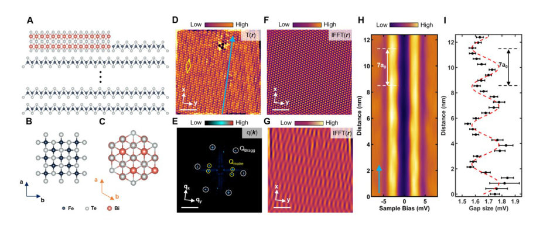
<figcaption class="paper-figure-caption"><b>Fig 1.</b> Fig. 1| Interface superconductivity emerged in 1QL-Bi2Te3/FeTe with moiré modulation.</figcaption>
</figure>
<figure class="paper-figure-card">

<figcaption class="paper-figure-caption"><b>Fig 2.</b> Fig. 2| Anisotropic Abrikosov vortex and pair breaking induced quasiparticle interference.</figcaption>
</figure>
<figure class="paper-figure-card">
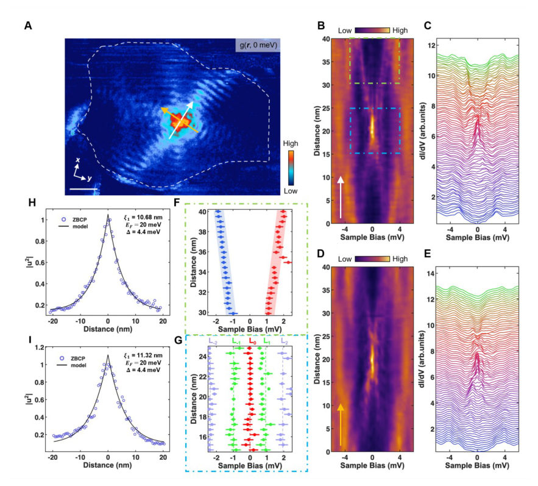
<figcaption class="paper-figure-caption"><b>Fig 3.</b> Fig. 3| Single vortex in superconducting Bi2Te3 island and analysis of the vortex bound</figcaption>
</figure>
<figure class="paper-figure-card">
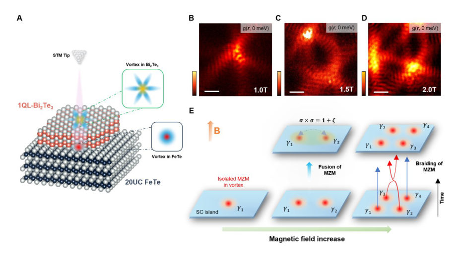
<figcaption class="paper-figure-caption"><b>Fig 4.</b> Fig. 4| Schematic of hybrid vortices measurement and the concept of operation for MZM</figcaption>
</figure>
</div>

<p><strong>Summary.</strong> This work reports on the observation of number-controllable Majorana zero modes in a $ ext{Bi}_2   ext{Te}_3/  ext{FeTe}$ superconducting heterojunction. Using STM spectroscopy, the researchers characterized a unique 'stacked-core' vortex structure derived from both superconducting layers. This establishes the heterostructure as a highly controllable platform for realizing and manipulating topological qubits.</p>
<p><strong>Why it may be interesting.</strong> The controlled realization of topologically non-trivial states (MZMs) in a solid-state heterostructure provides a clean, experimentally verifiable platform for studying topological quantum phenomena, which is highly relevant to open quantum systems.</p>
<details>
<summary>Detailed structure</summary>
<p><strong>Main problem.</strong> The primary challenge is realizing and controlling Majorana zero modes (MZMs) in solid-state devices for fault-tolerant topological quantum computation.</p>
<p><strong>Main result.</strong> The authors report spectroscopic evidence for number-controllable MZMs in a stoichiometric $   ext{Bi}_2   ext{Te}_3/  ext{FeTe}$ heterojunction, establishing a controlled platform for topological superconductivity.</p>
<p><strong>Method.</strong> Low-temperature scanning tunneling microscopy and spectroscopy (STM/S) were used to probe the superconducting gap, vortex structure, and bound states.</p>
<p><strong>Model / system.</strong> The system is a stoichiometric one quintuple layer (1QL) $  ext{Bi}_2   ext{Te}_3/  ext{FeTe}$ heterojunction, which exhibits interfacial superconductivity and forms a moiré superlattice due to lattice mismatch.</p>
<p><strong>Key observables.</strong> Spectroscopic evidence of MZMs (zero-bias conductance peaks), stacked vortex core structures, and the ability to tune the number of MZMs via magnetic field and island size.</p>
<p><strong>Important parameters / regimes.</strong> Low temperature (0.4 K), perpendicular magnetic field (1.0 T), and the lattice mismatch creating the moiré superlattice.</p>
<p><strong>Assumptions / limitations.</strong> The ability to tune the MZM number is demonstrated by varying the magnetic field and the lateral size of the $   ext{Bi}_2   ext{Te}_3$ islands.</p>
<p><strong>Figures summary.</strong> Figures illustrate the moiré pattern, anisotropic vortex profiles, and spectroscopic signatures showing both dispersive (X-shaped) and discrete (quantized) bound states within the vortex core.</p>
<p><strong>Paper structure.</strong> The paper systematically presents evidence of the moiré superlattice, characterizes the distinct two-component vortex bound states (one from each layer), and culminates in demonstrating the tunability of the MZM count.</p>
</details>
<details>
<summary>Abstract</summary>
<p>Creation and control of Majorana zero modes (MZMs) in solid devices is the key challenge in realizing fault tolerant topological quantum computation. Here we report spectroscopic evidence for number controllable MZMs in stoichiometric one quintuple layer Bi$_{2}$Te$_{3}$/FeTe heterostructures, together with the observation of stacked vortices in superconducting islands. Low temperature scanning tunnelling microscopy and spectroscopy reveal a long period moire superlattice arising from lattice mismatch, which induces nanoscale modulation of superconducting gaps. Magnetic vortices exhibit a stacked core structure with two layer derived bound state branches: a dispersive branch evolving into an X-shaped pattern away from the vortex center, and a quantum-limit branch characterized by a spatially unsplit MZMs together with discrete integer quantized Caroli-de Gennes-Matricon states. Notably, MZMs are observed in all measured vortices, and their number can be tuned by magnetic field and the size of Bi$_{2}$Te$_{3}$ islands. These results establish stoichiometric 1QL-Bi$_{2}$Te$_{3}$/FeTe as a patterned superconducting interface that enables isolated and few-vortex Majorana configurations, providing a controlled platform for fuse MZMs.</p>
</details>
<p><sub><a href="#top">↑ back to top</a></sub></p>

<p><a id="paper-2610.18712"></a></p>
<h3 id="pulsus-direct-frequency-domain-multidimensional-spectroscopy-beyond-the-impulsive-rotating-wave-approximation"><a href="http://arxiv.org/abs/2610.18712v1">PULSUS: Direct Frequency-Domain Multidimensional Spectroscopy Beyond the Impulsive Rotating-Wave Approximation</a></h3>
<p><strong>Authors:</strong> Alfonso Castillo-Gonzolez, Eric R. Bittnre<br>
<strong>Type:</strong> theory · <strong>Category:</strong> other · <strong>PDF:</strong> <a href="https://arxiv.org/pdf/2610.18712v1">https://arxiv.org/pdf/2610.18712v1</a><br>
<strong>Analysis basis:</strong> full PDF text, analyzed in chunks
<strong>Topic relevance:</strong> <code>methods for driven-dissipative</code> <strong>3/5</strong> · <code>Keldysh / 2PI / non-Gaussian methods</code> <strong>1/5</strong> · <code>Tavis-Cummings &amp; cavity-many-emitter</code> <strong>1/5</strong> · <code>correlated / nonlocal dissipation</code> <strong>1/5</strong> · <code>driven-dissipative phase transition</code> <strong>1/5</strong></p>
<div class="figure-strip-hint">↔ Scroll figures horizontally</div>
<div class="paper-figures-scroll">
<figure class="paper-figure-card">
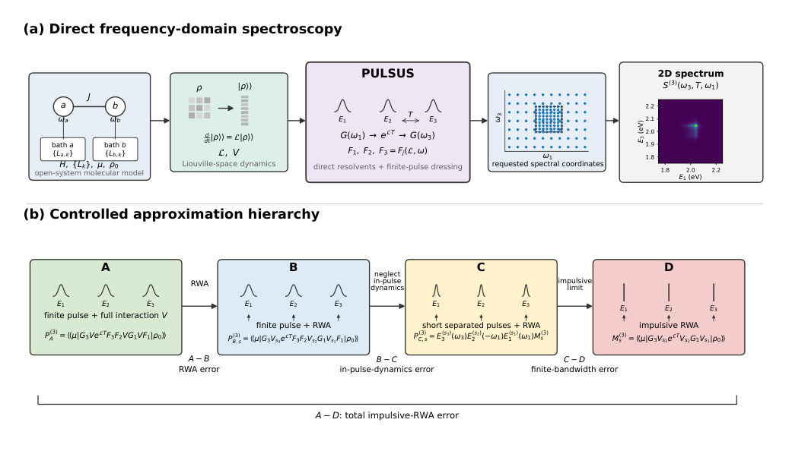
<figcaption class="paper-figure-caption"><b>Fig 1.</b> FIG. 1. Overview of the PULSUS direct frequency-domain formulation and the controlled approximation hierarchy. (a) An open-system molecular model specified by H, {Lk}, µ, and ρ0 is represented in Liouville space and evaluated directly at requested spectral coordinates using Liouvillian resolvents and finite-pulse dressing operators. The representative spectrum shown is obtained from the full finite-pulse calculation. The plotted energy coordinates are related to the angular-frequency variables by Ej = ℏωj. (b) Hierarchy of models used to separate the physical approximations. Model A retains finite-width pulses and the complete interaction superoperator V . Model B applies the rotating-wave...</figcaption>
</figure>
<figure class="paper-figure-card">
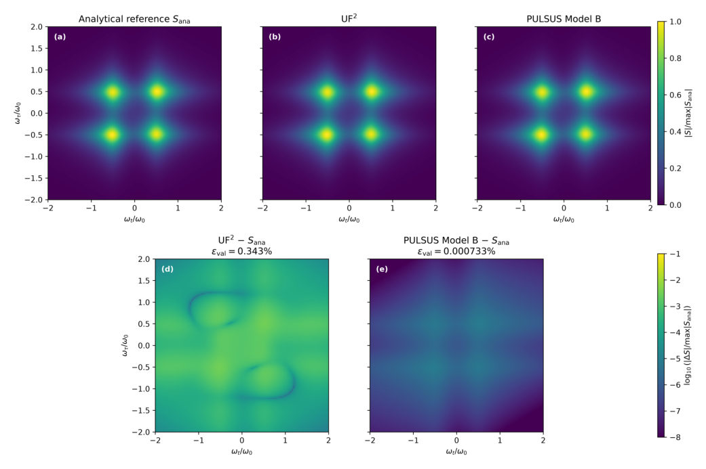
<figcaption class="paper-figure-caption"><b>Fig 2.</b> FIG. 2. External validation of the finite-pulse implementation against the analytical Gaussian-pulse benchmark of Smallwood et al. at waiting time T = 2πσ. (a) Magnitude of the analytical reference spectrum. (b) Corresponding UF2 result. (c) PULSUS Model B finite-pulse RWA result. The spectra in panels (a)–(c) are normalized by the maximum magnitude of the analytical spectrum. (d) Pointwise discrepancy between UF2 and the analytical result, shown as log10(|∆S|/ max |Sana|); the relative Frobenius discrepancy is 0.343%. (e) Corresponding discrepancy for PULSUS Model B, with relative Frobenius discrepancy 0.000733%. The frequency axes are expressed in units of the characteristic frequency ω0....</figcaption>
</figure>
<figure class="paper-figure-card">
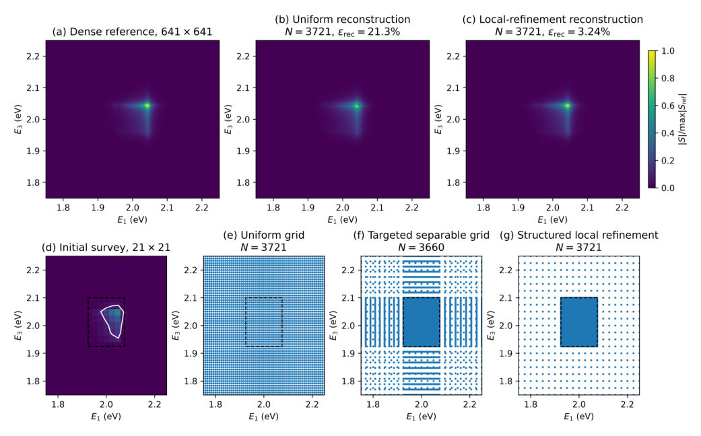
<figcaption class="paper-figure-caption"><b>Fig 3.</b> FIG. 3. Targeted frequency sampling of the finite-pulse nonrephasing spectrum for the coupled-dimer benchmark. (a) Dense 641 × 641 reference spectrum. (b) Reconstruction from a uniform global grid with N = 3721 sampled coordinates, giving ϵrec = 21.3%. (c) Reconstruction obtained from the structured local-refinement strategy with the same coordinate budget, giving ϵrec = 3.24%. Panels (a)–(c) show the response magnitude normalized by the maximum of the dense reference spectrum. (d) Initial 21 × 21 survey used to identify the spectrally active region. The white contour indicates the 10% magnitude threshold and the dashed rectangle shows the padded target window defined in Eq. (82). (e)...</figcaption>
</figure>
<figure class="paper-figure-card">

<figcaption class="paper-figure-caption"><b>Fig 4.</b> FIG. 4. Sampling and computational efficiency of the arbitrary-coordinate finite-pulse calculation. (a) Relative complex spectral reconstruction error, Eq. (83), as a function of the number of evaluated spectral coordinates for the uniform global grid, targeted separable grid, and structured local-refinement strategy. (b) The same reconstruction error plotted against the median wall-clock time required to obtain the sampled spectrum. Horizontal dashed lines indicate representative reconstruction errors of 10%, 5%, and 2%. Near the 10% level, the uniform calculation requires 8649 coordinates and 13.87 ms, whereas the structured local-refinement strategy reaches 9.10% error using 1392...</figcaption>
</figure>
<figure class="paper-figure-card">
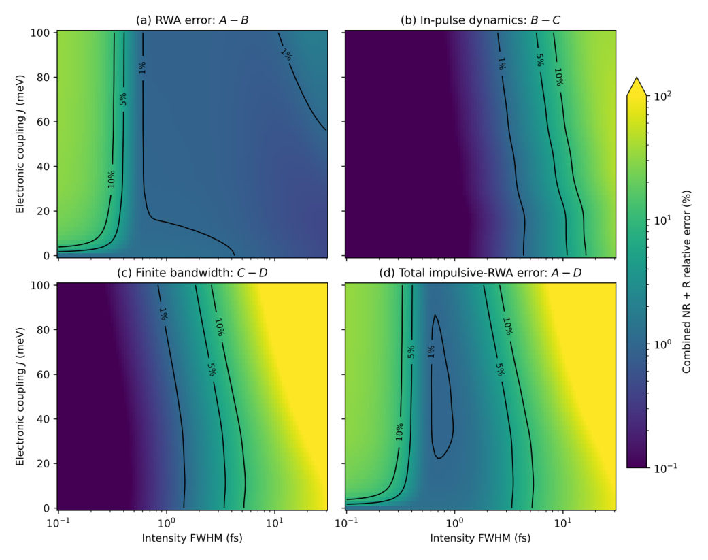
<figcaption class="paper-figure-caption"><b>Fig 5.</b> FIG. 5. Approximation-regime map for the coupled-dimer model as a function of electronic coupling J and pulse intensity FWHM. The color scale shows the combined rephasing and nonrephasing relative discrepancy defined in Sec. II, on a logarithmic scale. (a) A −B: error introduced by the rotating-wave approximation while retaining finite-pulse Liouvillian dressing. (b) B −C: error introduced by neglecting molecular evolution during the pulse envelopes. (c) C −D: error associated with removing the finite spectral bandwidth and taking the impulsive limit. (d) A −D: total discrepancy between the full finite-pulse model and the impulsive-RWA description. Black contours indicate relative errors of...</figcaption>
</figure>
</div>

<p><strong>Summary.</strong> The paper introduces PULSUS, a novel direct frequency-domain framework for calculating multidimensional spectroscopy signals in open quantum systems. It moves beyond the limitations of the impulsive rotating-wave approximation by using Liouville-space resolvents. The key finding is that approximations like RWA and the impulsive limit must be treated independently, as their failure modes are highly dependent on the specific pulse duration and spectral regime.</p>
<p><strong>Why it may be interesting.</strong> This work provides a powerful, systematic computational tool for analyzing complex quantum optical phenomena, allowing researchers to quantitatively dissect the contributions of different physical approximations in ultrafast spectroscopy.</p>
<details>
<summary>Detailed structure</summary>
<p><strong>Main problem.</strong> To develop a direct frequency-domain framework for multidimensional spectroscopy of open quantum systems that accurately surpasses the limitations of the impulsive rotating-wave approximation (RWA).</p>
<p><strong>Main result.</strong> The framework allows for a controlled comparison of various approximations (RWA, finite-pulse, impulsive), showing that the total error is nonmonotonic with pulse duration, and that the approximations cannot be assumed to improve simultaneously.</p>
<p><strong>Method.</strong> The authors utilize a Liouville-space representation and calculate the third-order response directly in the frequency domain using the causal Liouvillian resolvent, avoiding time-domain Fourier transforms.</p>
<p><strong>Model / system.</strong> The system involves open quantum dynamics governed by a Lindblad master equation, incorporating dissipation and dephasing. The light-matter interaction is modeled via an operator-valued coupling term $\mathbf{V}$ applied to the Liouville space evolution.</p>
<p><strong>Key observables.</strong> Multidimensional coherent spectroscopy signals, specifically the third-order response $M^{(3)}(\omega_3, T, \omega_1)$.</p>
<p><strong>Important parameters / regimes.</strong> Pulse duration (e.g., 0.10 fs, 20 fs), energy splitting ($J$), and the comparison between the full finite-pulse response and the impulsive-RWA limit.</p>
<p><strong>Assumptions / limitations.</strong> The method assumes the separated-pulse regime, uses Gaussian pulse envelopes, and remains perturbative in the optical field strength.</p>
<p><strong>Figures summary.</strong> Figures compare pointwise spectral discrepancies between the full finite-pulse response and the impulsive-RWA result across varying pulse durations, highlighting strong discrepancies at longer pulses.</p>
<p><strong>Paper structure.</strong> The paper develops from the general time-domain problem to the Liouville-space formulation, introduces the frequency-domain resolvent, and constructs a controlled hierarchy of approximations (finite-pulse, RWA, short-pulse, impulsive) to achieve direct spectral evaluation.</p>
</details>
<details>
<summary>Abstract</summary>
<p>We introduce PULSUS, a direct frequency-domain framework for multidimensional spectroscopy of open quantum systems beyond the impulsive rotating-wave approximation. Coherence-frequency intervals are represented through Liouvillian resolvents, while finite Gaussian pulses are incorporated through operator-valued functions of the field-free Liouvillian. This enables direct evaluation on Cartesian grids or arbitrary spectral coordinates while retaining molecular evolution during the pulse envelopes and, when required, the complete light--matter interaction.   The implementation is validated against analytical and independent time-domain benchmarks and supports targeted spectral sampling that reduces the number of evaluated coordinates when the response is spectrally localized. A controlled hierarchy of finite-pulse, rotating-wave, short-pulse, and impulsive models separates the errors introduced by each approximation. For a coupled electronic dimer, the total impulsive-RWA error is nonmonotonic in pulse duration: an intermediate regime provides the highest accuracy, whereas ultrashort pulses expose coupling-enabled beyond-RWA pathways and longer pulses develop substantial finite-pulse corrections. These results show that the impulsive and rotating-wave approximations cannot be assumed to improve simultaneously and should be tested when quantitatively interpreting multidimensional spectra. PULSUS provides a direct frequency-domain framework for carrying out that comparison.</p>
</details>
<p><sub><a href="#top">↑ back to top</a></sub></p>

<p><a id="paper-2610.18776"></a></p>
<h3 id="quantum-enhanced-mechanical-sensing-with-machine-learning-estimation"><a href="http://arxiv.org/abs/2610.18776v1">Quantum-enhanced mechanical sensing with machine-learning estimation</a></h3>
<p><strong>Authors:</strong> Finn Müßigbrodt, Andraž Omahen, Q. Rumman Rahman, Giulio Corazza, Yiwen Chu, Matteo Fadel<br>
<strong>Type:</strong> both · <strong>Category:</strong> other · <strong>PDF:</strong> <a href="https://arxiv.org/pdf/2610.18776v1">https://arxiv.org/pdf/2610.18776v1</a><br>
<strong>Analysis basis:</strong> full PDF text, analyzed in chunks
<strong>Topic relevance:</strong> <code>quantum measurements</code> <strong>3/5</strong> · <code>methods for driven-dissipative</code> <strong>2/5</strong> · <code>QC/QI experiment</code> <strong>1/5</strong> · <code>quantum optics experiment</code> <strong>1/5</strong></p>
<div class="figure-strip-hint">↔ Scroll figures horizontally</div>
<div class="paper-figures-scroll">
<figure class="paper-figure-card">

<figcaption class="paper-figure-caption"><b>Fig 1.</b> FIG. 1. Mechanical resonator device and sensing protocol. (a) False-colour image of the cQAD device, comprising a superconducting transmon qubit (blue) coupled to a high-overtone bulk acoustic wave resonator (HBAR, pink). An external signal of amplitude Ωis sensed by the device. (b) Illustration of displacement sensing in phase space. The external drive displaces the Wigner distribution of the prepared Fock-state probe by an amount α, indicated by the arrow. (c) Experimental sequence for the sensing protocol. A shaped optimal control (OC) pulse prepares the target Fock state while the qubit is tuned into resonance with the phonon mode; the qubit is subsequently reset by using an ancilla...</figcaption>
</figure>
<figure class="paper-figure-card">
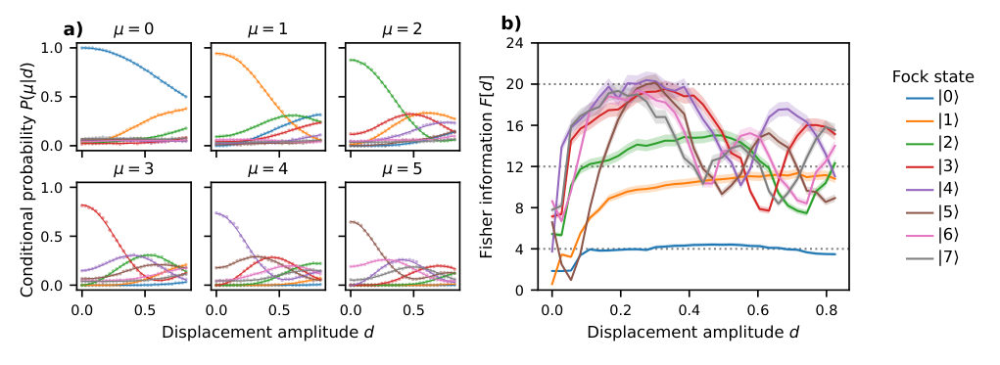
<figcaption class="paper-figure-caption"><b>Fig 2.</b> FIG. 2. Displacement response and Fisher information of Fock-state probes. (a), Conditional probabilities P(µ|d) for detecting µ ∈{0, . . . , 5} phonons as a function of the displacement amplitude d, for an initial Fock state |k⟩with k ∈{0, . . . , 7}. Points show the experimentally measured probabilities and solid curves the fits to the analytical model. (b), Fisher information F[d] obtained from the fitted phonon-number distributions in a, for the same initial Fock states. Dotted horizontal lines indicate the ideal Fock-state quantum Fisher information FQ[d] = 4(2k + 1) for k = 0, 1, 2. Shaded regions indicate the uncertainty of the inferred Fisher information.</figcaption>
</figure>
<figure class="paper-figure-card">

<figcaption class="paper-figure-caption"><b>Fig 3.</b> FIG. 3. Sensitivity scaling. Maximum Fisher information Fmax as a function of the (final) mean phonon number ¯n of the probe state. The orange line denotes the ideal Fisher infor- mation scaling FQ = 4(2¯n + 1), achieved by Fock states and unitary displacements. The green curve is the FQ achieved by Fock states in the presence of losses during the displace- ment, as described by Eq. (5) for our experimental parame- ters. The red curve further includes state preparation errors, as described by an ansatz state of the same fidelity Fk as the one measured [55]. Blue points show the Fisher information measured experimentally, which saturates for ¯n ≳4. This sat- uration arises from the...</figcaption>
</figure>
<figure class="paper-figure-card">
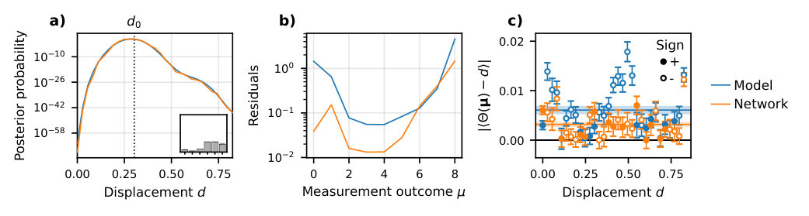
<figcaption class="paper-figure-caption"><b>Fig 4.</b> FIG. 4. Model-free displacement estimation with a neural network. Comparison between the Bayesian analysis based on the fitted response Eq. (9) (blue) and on the neural-network posterior Eq. (12) (orange), for a probe prepared in |4⟩. (a) Posterior probability for a single record of M = 100 single-shot outcomes acquired at the true displacement amplitude d∗= 0.30 (dotted line). The two posteriors coincide over the full plotted range. Inset: histogram of the detected phonon numbers µ in this record. (b) Residuals between the measured posterior probabilities P(d|µ) and each reconstruction, as a function of the measurement outcome µ (summed over the calibrated displacement range). The network...</figcaption>
</figure>
</div>

<p><strong>Summary.</strong> This research demonstrates quantum-enhanced mechanical sensing by utilizing a microgram-scale acoustic resonator coupled to a qubit. By preparing the mechanical mode in non-Gaussian Fock states, the authors achieved a 7.0 dB improvement in signal sensitivity over classical limits. The use of machine learning to estimate the signal further validates this quantum advantage by minimizing systematic model errors.</p>
<p><strong>Why it may be interesting.</strong> This work is highly relevant as it pushes quantum metrology into the macroscopic mechanical domain, demonstrating how quantum resources (non-Gaussian states) can enhance sensing beyond classical limits in a solid-state platform.</p>
<details>
<summary>Detailed structure</summary>
<p><strong>Main problem.</strong> The paper addresses the challenge of pushing quantum measurement sensitivities beyond the Standard Quantum Limit (SQL) for phase-insensitive signals using macroscopic mechanical oscillators.</p>
<p><strong>Main result.</strong> They demonstrated a 7.0 dB sensitivity gain in signal-amplitude estimation using a microgram-scale acoustic resonator prepared in non-Gaussian Fock states. Furthermore, they showed that a model-free neural network estimator can reproduce this quantum advantage while significantly reducing systematic bias.</p>
<p><strong>Method.</strong> The methodology combines quantum state preparation (Fock states via optimal control), quantum sensing protocols involving weak resonant drives, and advanced estimation techniques including Bayesian analysis and neural network training.</p>
<p><strong>Model / system.</strong> The physical system is a high-overtone bulk acoustic wave resonator (HBAR) coupled to a transmon qubit (cQAD device). The sensing relies on preparing the mechanical mode in Fock states, which are then probed by a weak resonant signal.</p>
<p><strong>Key observables.</strong> Fisher information, signal-amplitude sensitivity gain (7.0 dB), phonon-number distribution $P(\mu)$, and the Hellinger distance $D_H^2$.</p>
<p><strong>Important parameters / regimes.</strong> HBAR effective mass ($\approx 16 \mu	ext{g}$), Qubit/Phonon frequencies ($\approx 5.07-5.08 	ext{ GHz}$), and the probe state Fock number ($|k
angle$).</p>
<p><strong>Assumptions / limitations.</strong> The initial estimation relied on a parametrized model, which was overcome by using a model-free neural network estimator. The quantum enhancement peaks for the $|4
angle$ state due to state preparation imperfections.</p>
<p><strong>Figures summary.</strong> Figures illustrate the device setup and sensing protocol, showing measured phonon-number populations for different Fock states before and after displacement, and comparing the squared Hellinger distance for various displacements.</p>
<p><strong>Paper structure.</strong> The paper details the quantum mechanical model (Hamiltonians), the sensing protocol involving Fock state preparation and weak signal interaction, the theoretical limits using Fisher information, and finally, the experimental demonstration using both model-based and model-free (NN) estimation techniques.</p>
</details>
<details>
<summary>Abstract</summary>
<p>Massive mechanical oscillators couple directly to forces, accelerations and gravity, making them attractive probes of new physics and of quantum mechanics at macroscopic scales. Pushing sensitivities beyond the standard quantum limit for signals of unknown phase requires non-Gaussian quantum states, whose metrological advantage has so far been confined to lighter systems such as trapped ions. Here we operate a microgram-scale acoustic mode of a high-overtone bulk acoustic wave resonator as a phase-insensitive quantum-enhanced sensor. A transmon qubit prepares the mode in Fock states of up to seven phonons by optimal control, and resolves its phonon-number distribution after interaction with a weak resonant signal. Bayesian analysis yields a Fisher information five times the vacuum value, a 7.0 dB gain in signal-amplitude sensitivity over any classical probe state, irrespective of its energy, currently limited by state preparation infidelities. We then train a neural network on the measured sensor response to perform Bayesian estimation without any analytical model of the system, showing the same sensitivity gain with half the systematic bias. Our results establish acoustic resonators prepared in non-Gaussian states as quantum-enhanced probes for high-frequency gravitational waves, dark matter and wave-function collapse.</p>
</details>
<p><sub><a href="#top">↑ back to top</a></sub></p>

<p><a id="paper-2610.18049"></a></p>
<h3 id="scalable-long-distance-quantum-fan-out-gates-with-reduced-resource-overhead"><a href="http://arxiv.org/abs/2610.18049v1">Scalable long-distance quantum fan-out gates with reduced resource overhead</a></h3>
<p><strong>Authors:</strong> Wen-Qiang Liu, Hai-Rui Wei<br>
<strong>Type:</strong> both · <strong>Category:</strong> quantum information and computing · <strong>PDF:</strong> <a href="https://arxiv.org/pdf/2610.18049v1">https://arxiv.org/pdf/2610.18049v1</a><br>
<strong>Analysis basis:</strong> full PDF text, analyzed in chunks
<strong>Topic relevance:</strong> <code>quantum optics experiment</code> <strong>3/5</strong> · <code>QC/QI experiment</code> <strong>2/5</strong> · <code>interference shaping light</code> <strong>1/5</strong> · <code>quantum measurements</code> <strong>1/5</strong></p>
<div class="figure-strip-hint">↔ Scroll figures horizontally</div>
<div class="paper-figures-scroll">
<figure class="paper-figure-card">

<figcaption class="paper-figure-caption"><b>Fig 1.</b> Figure 1. Quantum circuit for implementing an n-qubit long-distance Cn gate acting on n remote qubits A, B, . . . , N, based on the standard decomposition-based method [56]. Here CNOTj i denotes a CNOT gate with control qubit i and target qubit j. Qubits A, a1, . . . , an−1 are held by Alice, qubits B and b by Bob, qubits C and c by Charlie, and so on.</figcaption>
</figure>
<figure class="paper-figure-card">
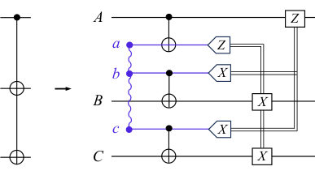
<figcaption class="paper-figure-caption"><b>Fig 2.</b> Figure 2. (a) Circuit representation of the three-qubit fan-out C3 gate. (b) Quantum circuit for implementing a long-distance C3 gate on three spatially separated qubits A, B and C held by Alice, Bob, and Charlie, respectively. A pre-shared ancillary GHZ state acts as the quantum channel and interacts with the gate qubits via three local CNOT gates. The nonlocal C3 gate is completed by performing single-qubit measurements on the ancillary qubits in appropriate bases, followed by classical feed-forward operations.</figcaption>
</figure>
<figure class="paper-figure-card">
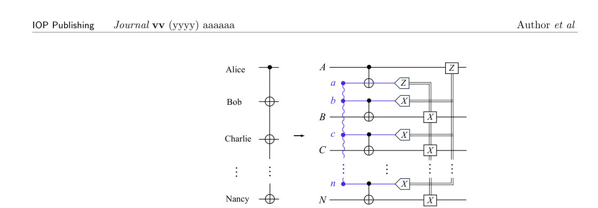
<figcaption class="paper-figure-caption"><b>Fig 3.</b> Figure 3. Quantum circuit for implementing a long-distance Cn gate on n remote qubits A, B, . . . , N. An n-qubit GHZ state as ancillary quantum channel and n local CNOT gates are required.</figcaption>
</figure>
<figure class="paper-figure-card">

<figcaption class="paper-figure-caption"><b>Fig 4.</b> Figure 5. Schematic optical setup to implement heralded and nondestructive long-distance Cn gate among n spatially separated parties. (a) An n-photon GHZ state is distributed among the n participants as an ancillary entangled resource. (b) Local optical module employed by Alice to manipulate her two photons A and a. (c) Identical optical modules used by the remaining parties (Bob to Nancy) to manipulate their respective photon pairs. The letters A to N denote the parties from Alice to Nancy.</figcaption>
</figure>
<figure class="paper-figure-card">

<figcaption class="paper-figure-caption"><b>Fig 5.</b> Figure 7. The generation of an n-qubit ancillary entangled state |ψ⟩ab...n for implementing the post-selected long- distance Cn gate. When n is even, n</figcaption>
</figure>
</div>

<p><strong>Summary.</strong> This paper presents an efficient protocol for implementing long-distance quantum fan-out gates ($C_n$) essential for quantum networks. By leveraging pre-shared GHZ states, the authors significantly reduce the required gate count compared to conventional methods. They further demonstrate the feasibility of these protocols using advanced linear optical architectures for photonic quantum computation.</p>
<p><strong>Why it may be interesting.</strong> This work directly tackles the resource overhead challenge in quantum networking by providing resource-efficient gate implementations, which is crucial for scaling up any quantum computation platform.</p>
<details>
<summary>Detailed structure</summary>
<p><strong>Main problem.</strong> The paper addresses the critical need for scalable, long-distance quantum fan-out gates ($C_n$) necessary for distributed quantum computation and quantum networks.</p>
<p><strong>Main result.</strong> The proposed scheme significantly reduces the required number of CNOT and Hadamard gates compared to standard decomposition methods, and the developed optical architectures achieve higher success probabilities.</p>
<p><strong>Method.</strong> The authors propose a protocol utilizing a pre-shared $n$-qubit Greenberger-Horne-Zeilinger (GHZ) state combined with local CNOT gates and classical feed-forward operations.</p>
<p><strong>Model / system.</strong> The work is modeled abstractly using qubits and then physically realized using linear optics, where qubits are encoded in the polarization states of single photons.</p>
<p><strong>Key observables.</strong> Gate counts (CNOT, Hadamard), success probabilities, and quantum circuit diagrams for $C_n$ gates.</p>
<p><strong>Important parameters / regimes.</strong> Gate counts reduction factor of $(n-2)$, photon survival efficiency ($\eta_s$), and detection efficiencies ($\eta_d$).</p>
<p><strong>Assumptions / limitations.</strong> The feasibility relies on the ability to generate and utilize high-fidelity $n$-qubit GHZ states and the performance of linear optical components.</p>
<p><strong>Figures summary.</strong> Figures illustrate the quantum circuits for the standard decomposition-based $C_n$ gate and the proposed GHZ-state-based scheme, including schematics for the heralded optical implementation using PBSs.</p>
<p><strong>Paper structure.</strong> The paper progresses from defining the problem of scalable $C_n$ gates, detailing the abstract protocol using GHZ states, and finally presenting two specific, highly optimized optical architectures (heralded and post-selected) for photonic implementation.</p>
</details>
<details>
<summary>Abstract</summary>
<p>Scalable long-distance quantum gates are essential for distributed quantum computation and scalable quantum networks. We propose an efficient scheme for implementing an $n$-qubit fan-out gate $C^n$ (also known as a controlled-NOT-$\cdots$-NOT gate) across spatially separated parties. Our protocol requires only a pre-shared $n$-qubit Greenberger-Horne-Zeilinger state, $n$ local controlled-NOT (CNOT) gates, and feed-forward operations, thereby reducing both the CNOT and Hadamard gate counts by $(n-2)$ when compared with the standard decomposition-based approach. We further develop two optical architectures to implement the heralded and post-selected $n$-photon fan-out gates, respectively. These schemes require fewer single photons resources and achieve higher success probabilities than their decomposition-based counterparts, representing significant improvements. The results indicate that our approach is experimentally feasible and pave the way toward practical long-distance quantum computation.</p>
</details>
<p><sub><a href="#top">↑ back to top</a></sub></p>

<p><a id="paper-2610.18681"></a></p>
<h3 id="explicitly-correlated-ground-states-with-a-feedback-free-variational-hybrid-algorithm"><a href="http://arxiv.org/abs/2610.18681v1">Explicitly correlated ground states with a feedback-free variational hybrid algorithm</a></h3>
<p><strong>Authors:</strong> Benjamin Corbett, Akimasa Miyake<br>
<strong>Type:</strong> both · <strong>Category:</strong> strongly correlated electrons · <strong>PDF:</strong> <a href="https://arxiv.org/pdf/2610.18681v1">https://arxiv.org/pdf/2610.18681v1</a><br>
<strong>Analysis basis:</strong> full PDF text, analyzed in chunks
<strong>Topic relevance:</strong> <code>analog quantum simulation</code> <strong>3/5</strong> · <code>QC/QI experiment</code> <strong>2/5</strong> · <code>quantum measurements</code> <strong>1/5</strong></p>
<div class="figure-strip-hint">↔ Scroll figures horizontally</div>
<div class="paper-figures-scroll">
<figure class="paper-figure-card">
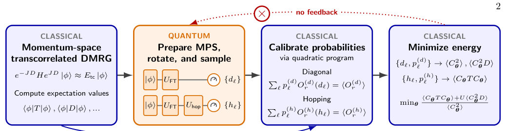
<figcaption class="paper-figure-caption"><b>Fig 1.</b> FIG. 1. Transcorrelated momentum-space DMRG with the Gutzwiller factor eJD produces the approximate ground state |ϕ⟩and nonvariational energy Etc. A quantum processor prepares |ϕ⟩, rotates it to real space, and measures in fixed diagonal and hopping bases. The samples are calibrated to reproduce known MPS expectation values and reused to optimize arbitrary real-space diagonal correlators Cθ entirely in classical post-processing, without a quantum–classical feedback loop.</figcaption>
</figure>
<figure class="paper-figure-card">
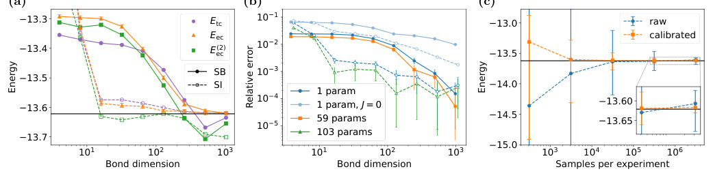
<figcaption class="paper-figure-caption"><b>Fig 2.</b> FIG. 2. (a) Transcorrelated energy Etc, sampled explicitly correlated energy Eec, and the minimum of its second-order Taylor approximation E(2) ec , Eq. (4), for the one-parameter Gutzwiller correlator versus bond dimension χ for the spin-blocked (SB) and spin-interleaved (SI) orderings. (b) Relative Eec errors for the Gutzwiller, 59-parameter, and 103-parameter correlators and for a Gutzwiller correlator on a non-transcorrelated (J = 0) reference, which barely improves on direct DMRG (not shown). (c) Median and central 68% interval from partitioning 157 million samples for the χ = 1024 SI MPS into experiments of varying size, with and without calibration. Horizontal lines mark the exact...</figcaption>
</figure>
<figure class="paper-figure-card">
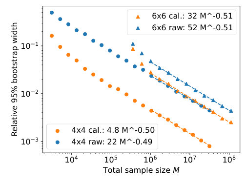
<figcaption class="paper-figure-caption"><b>Fig 3.</b> FIG. 3. Relative width of 95% bootstrap confidence inter- vals versus total samples M = M (d) + 4NM (s) for raw and calibrated (cal.) energies from χ = 4 SB MPSs with the Gutzwiller correlator. Widths are divided by the reference ground-state energy magnitude, from exact diagonalization for 4 × 4 and auxiliary-field QMC for 6 × 6 [34]. The alloca- tion is M (d) : M (s) = 122 : 3. Plotted budgets have at least 95% successful replicates; dashed power-law fits use M ≥106.</figcaption>
</figure>
<figure class="paper-figure-card">

<figcaption class="paper-figure-caption"><b>Fig 4.</b> FIG. 4. (a) Energy bootstrap distributions from raw and particle-number-postselected (p.s.) H2-2 data without calibration. (b) Postselected, calibrated hardware data and 1,000 calibrated noise-free experiments matched to the retained sample count in every measurement setting. (c) The z-component of the spin correlations from postselected and calibrated H2-2 data, matched- sample noise-free experiments, the biorthogonal transcorrelated MPS (t.c.), and the exact ground state (g.s.), averaged over displacements of length ρ. Solid and dashed lines in (a) and (b) mark the exact ground-state and full-sample noise-free energies.</figcaption>
</figure>
<figure class="paper-figure-card">
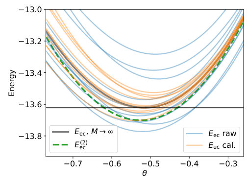
<figcaption class="paper-figure-caption"><b>Fig 5.</b> FIG. 5. The explicitly correlated energy landscape with the Gutzwiller correlator, eθD, for the χ = 1024 SI MPS. Shown are the infinite-sample limit Eec, M →∞, the second-order Taylor approximation E(2) ec , and ten randomly selected exper- iments each using 314,000 samples with and without calibra- tion. The horizontal line is the exact ground-state energy.</figcaption>
</figure>
</div>

<p><strong>Summary.</strong> The paper introduces a novel, feedback-free hybrid quantum algorithm to calculate the ground state energy of the Fermi-Hubbard model. It addresses the mismatch between momentum-space quantum hardware and real-space correlation methods by performing variational optimization classically after quantum measurement. This approach demonstrates high accuracy on quantum hardware while requiring fewer quantum resources than competing methods.</p>
<p><strong>Why it may be interesting.</strong> This work is highly relevant as it proposes a practical, resource-aware quantum algorithm for strongly correlated matter that circumvents the need for complex, iterative quantum feedback loops, making it more amenable to near-term quantum hardware.</p>
<details>
<summary>Detailed structure</summary>
<p><strong>Main problem.</strong> The core challenge is bridging the gap between explicitly correlated methods, which naturally use real-space correlators, and quantum processors, which operate naturally in momentum space, for strongly correlated electron systems.</p>
<p><strong>Main result.</strong> The authors propose a hybrid, feedback-free algorithm that achieves a significantly reduced relative ground-state energy error (down to 3.5% via calibration) on a 32-qubit system, outperforming other hybrid methods.</p>
<p><strong>Method.</strong> The algorithm uses a quantum processor to prepare a low-entanglement momentum-space MPS, which is then rotated to real space. The crucial step is that the correlator parameters are optimized entirely in classical post-processing, avoiding a quantum-classical feedback loop.</p>
<p><strong>Model / system.</strong> The study focuses on the fully periodic 2D Fermi–Hubbard model, simulated at half-filling, using a Hamiltonian involving hopping ($t$) and on-site repulsion ($U$). The simulation is performed on a 32-qubit quantum processor.</p>
<p><strong>Key observables.</strong> Relative ground-state energy error ($|E_{ec} - E_{gs}|/|E_{gs}|$), spin correlation observable ($S_{zz}(
ho)$), and various expectation values required for energy calculation.</p>
<p><strong>Important parameters / regimes.</strong> Bond dimension ($\chi=4$), lattice size ($4 	imes 4$), and the ratio $U/t=4$.</p>
<p><strong>Assumptions / limitations.</strong> The transcorrelated energy used for precomputation is nonvariational, and the final energy minimization relies on classical post-processing of sampled distributions, which are calibrated using low-order moments.</p>
<p><strong>Figures summary.</strong> Figures illustrate the workflow (DMRG $
ightarrow$ Quantum $
ightarrow$ Classical), compare energy convergence between transcorrelated and explicitly correlated methods, and show the dramatic improvement in energy error when calibration is applied to quantum hardware samples.</p>
<p><strong>Paper structure.</strong> The paper first introduces the fundamental mismatch in bases. It then details the hybrid algorithm workflow, showing the quantum preparation and classical optimization. Results are presented by comparing the energy convergence of different methods and demonstrating the performance gains on actual quantum hardware.</p>
</details>
<details>
<summary>Abstract</summary>
<p>Explicitly correlated methods, which represent dominant short-range correlations by a diagonal Jastrow-type correlator, are designed to accurately describe systems of strongly correlated electrons, such as the fully periodic 2D Fermi--Hubbard model. However, as the reference state is compact in momentum space whereas the correlator acts naturally in real space, there is a fundamental mismatch of bases that classical algorithms resolve only by restricting the reference or the correlator. Here we propose a hybrid algorithm in which a quantum processor prepares a low-entanglement momentum-space matrix product state (MPS), precomputed classically by the transcorrelated method at the cost of a nonvariational energy, rotates it to real space, and measures in bases fixed by the Hamiltonian. Because the measurement bases are independent of the correlator, the correlator can be variationally optimized entirely in classical post-processing with no quantum-classical feedback loop. We demonstrate our algorithm on 32 qubits of Quantinuum's H2-2 with a bond-dimension-4 MPS for the half-filled $4 \times 4$ lattice and achieve a relative ground-state energy error of $16 \pm 4\%$ after postselection, reduced to $3.5 \pm 0.5\%$ by calibration using low-order moments from the MPS. Compared with other feedback-free hybrid algorithms, even under generous assumptions, our method requires fewer samples than quantum-selected configuration interaction and fewer two-qubit gates than quantum Krylov methods.</p>
</details>
<p><sub><a href="#top">↑ back to top</a></sub></p>

<p><a id="paper-2610.18350"></a></p>
<h3 id="free-energy-of-non-convex-multi-species-ising-spin-glasses-with-external-fields"><a href="http://arxiv.org/abs/2610.18350v1">Free energy of non-convex multi-species Ising spin glasses with external fields</a></h3>
<p><strong>Authors:</strong> Jeanne Boursier, Jean-Christophe Mourrat<br>
<strong>Type:</strong> theory · <strong>Category:</strong> disordered systems and neural networks · <strong>PDF:</strong> <a href="https://arxiv.org/pdf/2610.18350v1">https://arxiv.org/pdf/2610.18350v1</a><br>
<strong>Analysis basis:</strong> full PDF text, analyzed in chunks
<strong>Topic relevance:</strong> <code>Keldysh / 2PI / non-Gaussian methods</code> <strong>3/5</strong> · <code>analog quantum simulation</code> <strong>1/5</strong> · <code>methods for driven-dissipative</code> <strong>1/5</strong> · <code>quantum measurements</code> <strong>1/5</strong></p>
<div class="figure-strip-hint">↔ Scroll figures horizontally</div>
<div class="paper-figures-scroll">
<figure class="paper-figure-card">
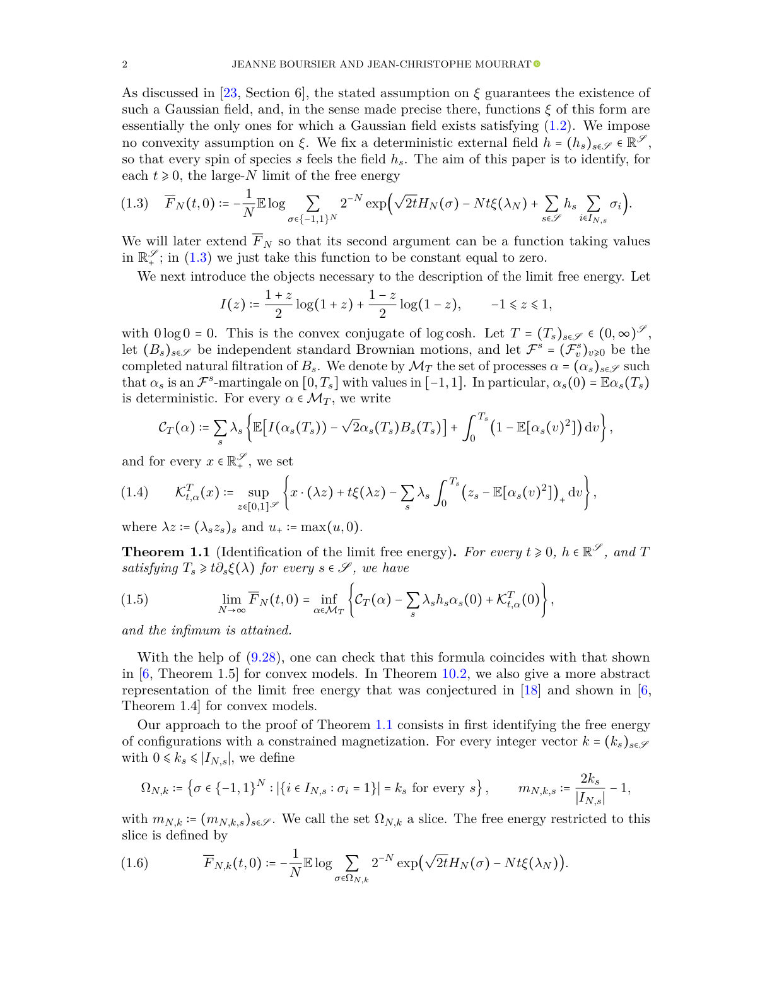
<figcaption class="paper-figure-caption"><b>Fig 1.</b> Low-resolution page preview, page 2</figcaption>
</figure>
<figure class="paper-figure-card">

<figcaption class="paper-figure-caption"><b>Fig 2.</b> Low-resolution page preview, page 3</figcaption>
</figure>
<figure class="paper-figure-card">
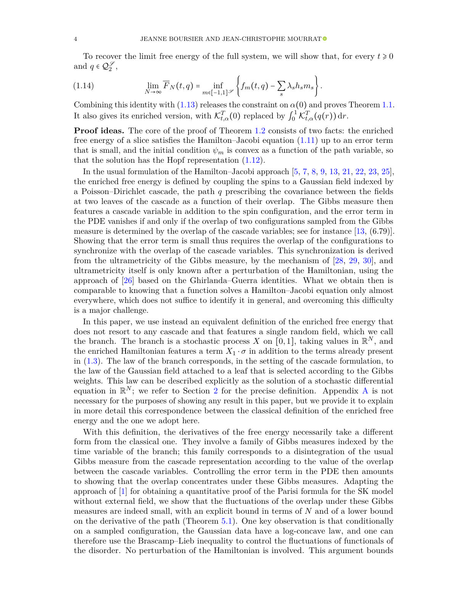
<figcaption class="paper-figure-caption"><b>Fig 3.</b> Low-resolution page preview, page 4</figcaption>
</figure>
<figure class="paper-figure-card">
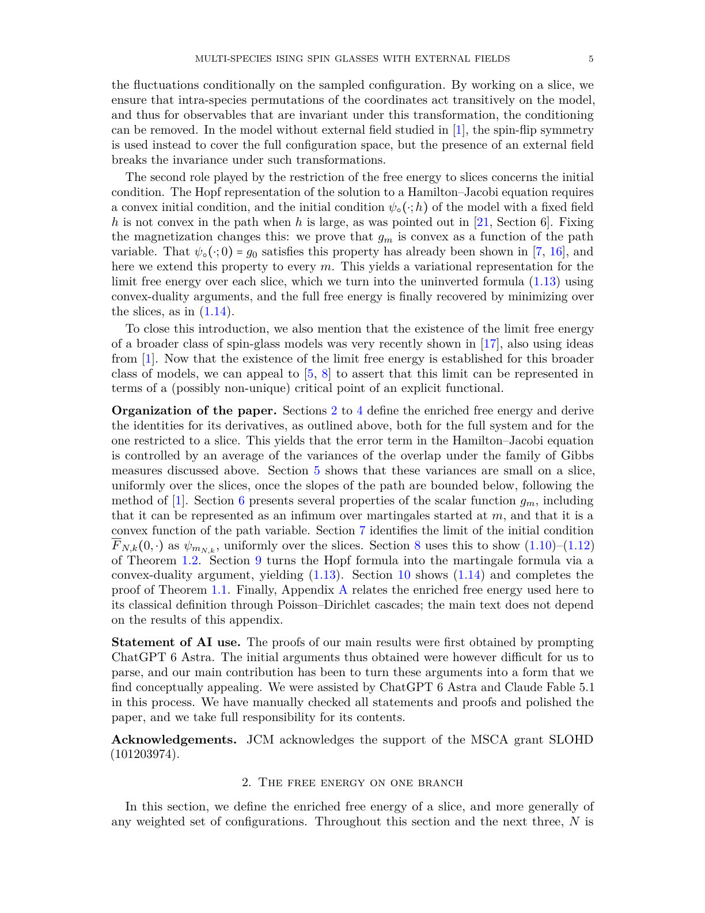
<figcaption class="paper-figure-caption"><b>Fig 4.</b> Low-resolution page preview, page 5</figcaption>
</figure>
<figure class="paper-figure-card">
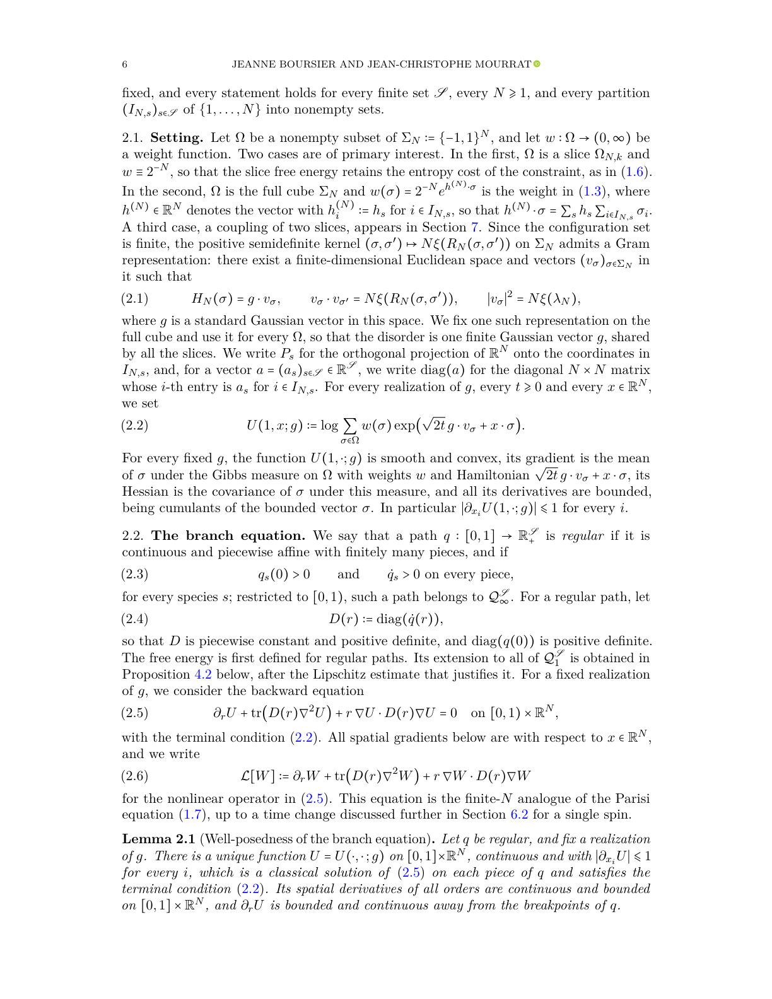
<figcaption class="paper-figure-caption"><b>Fig 5.</b> Low-resolution page preview, page 6</figcaption>
</figure>
</div>

<p><strong>Summary.</strong> This work calculates the limit free energy for complex multi-species Ising spin glasses, overcoming the limitation of requiring convexity assumptions on the system's interactions. It achieves this by reformulating the problem using variational principles over Brownian martingales and solving associated Hamilton-Jacobi equations.</p>
<p><strong>Why it may be interesting.</strong> While focused on classical statistical mechanics, the techniques involving variational representations over continuous paths (Brownian martingales) and the connection to PDEs (Hamilton-Jacobi) are highly relevant to modern theoretical physics, including quantum field theory and open quantum systems.</p>
<details>
<summary>Detailed structure</summary>
<p><strong>Main problem.</strong> The paper aims to determine the limit free energy of mean-field multi-species Ising spin glasses, crucially without assuming the convexity of the Hamiltonian's covariance function.</p>
<p><strong>Main result.</strong> The limit free energy is given by an 'uninverted' variational formula over Brownian martingales, derived through the solution of a Hamilton-Jacobi equation.</p>
<p><strong>Method.</strong> The proof involves restricting the problem to fixed magnetization 'slices,' solving the resulting Hamilton-Jacobi equation, and then using convex duality to obtain the final variational representation.</p>
<p><strong>Model / system.</strong> The system is a multi-species Ising spin glass defined by a Gaussian field $H_N(\sigma)$ with a covariance structure $\xi$ that is not assumed to be convex. External fields $h$ are also included.</p>
<p><strong>Key observables.</strong> Limit free energy $F_N(t,0)$, enriched free energy $U(1, x; g)$, and the cost functional $A_q$.</p>
<p><strong>Important parameters / regimes.</strong> The limit is taken as $N 	o \infty$. The analysis involves paths $q$ and Brownian martingales $\alpha$.</p>
<p><strong>Assumptions / limitations.</strong> The primary strength is avoiding the assumption of convexity for the covariance function $\xi$. The derivation relies on showing the convergence of error terms related to the enriched free energy.</p>
<p><strong>Figures summary.</strong> Not specified in the notes, but the structure suggests mathematical derivations involving equations for free energy (e.g., Eq. 1.3, 1.11, 1.5).</p>
<p><strong>Paper structure.</strong> The paper develops the result by first analyzing the free energy for fixed magnetization (slices), leading to a Hamilton-Jacobi equation solution, and finally extending this to the full system limit via variational principles over martingales.</p>
</details>
<details>
<summary>Abstract</summary>
<p>We identify the limit free energy of mean-field multi-species spin glasses with +/-1 spins, allowing for the presence of external fields, and without assuming any convexity property of the covariance function of the Hamiltonian. The limit is given by an "uninverted" variational formula over Brownian martingales. The proof consists in first identifying the limit free energy of configurations with a fixed magnetization. Once the magnetization is fixed, we can show the convergence of the enriched free energy to the solution of a Hamilton-Jacobi equation. The magnetization constraint is also used to show the convexity of the initial condition in this equation, and this yields a variational representation of the solution, as a Hopf formula. Convex duality then turns this formula into an optimization over martingales whose initial values are the prescribed magnetizations.</p>
</details>
<p><sub><a href="#top">↑ back to top</a></sub></p>

<p><a id="paper-2610.17334"></a></p>
<h3 id="generating-superposition-of-transverse-ising-ground-states-by-quantum-interaction"><a href="http://arxiv.org/abs/2610.17334v1">Generating Superposition of Transverse Ising Ground States by Quantum Interaction</a></h3>
<p><strong>Authors:</strong> Koushik Das, Sayan Mondal, Ujjwal Sen<br>
<strong>Type:</strong> theory · <strong>Category:</strong> statistical mechanics · <strong>PDF:</strong> <a href="https://arxiv.org/pdf/2610.17334v1">https://arxiv.org/pdf/2610.17334v1</a><br>
<strong>Analysis basis:</strong> full PDF text, analyzed in chunks
<strong>Topic relevance:</strong> <code>analog quantum simulation</code> <strong>3/5</strong> · <code>quantum measurements</code> <strong>2/5</strong> · <code>non-equilibrium universality</code> <strong>1/5</strong></p>
<div class="figure-strip-hint">↔ Scroll figures horizontally</div>
<div class="paper-figures-scroll">
<figure class="paper-figure-card">

<figcaption class="paper-figure-caption"><b>Fig 1.</b> Figure 1. A cat can be sitting, stretching, or lying down, representing three different phases in this illustration. Its behavior differs between these phases, but how would it behave in a superposition of them? In this work, we investigate coherent superpositions of ground states of the transverse-field Ising model belonging to the ferromagnetic, anti-ferromagnetic, and paramagnetic phases, and study the physical properties of the resulting states.</figcaption>
</figure>
<figure class="paper-figure-card">
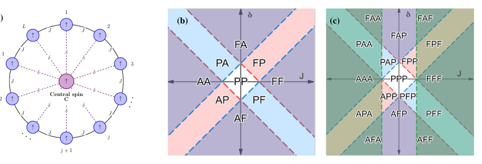
<figcaption class="paper-figure-caption"><b>Fig 2.</b> Figure 2. Schematic of the setup for preparing superpositions of quantum Ising ground states and the corresponding superposition sectors. (a) A one-dimensional transverse-field Ising chain coupled to a central spin through the quantum interaction defined in Eqs. (1) and (2). (b) Superposition sectors in the J-δ plane for a spin-1/2 central system. The first and second letters denote the phases of the ground states |g(J −δ)⟩and |g(J + δ)⟩, respectively. (c) Superposition sectors in the J-δ plane for a spin-1 central system. The first, second, and third letters denote the phases of the ground states |g(J + δ)⟩, |g(J −δ)⟩, and |g(J)⟩, respectively. In panels (b) and (c), P, F, and A denote the...</figcaption>
</figure>
<figure class="paper-figure-card">

<figcaption class="paper-figure-caption"><b>Fig 3.</b> Figure 3. Transverse magnetization Mz of superpositions of quan- tum Ising ground states across the J–δ plane. (a) The state given in Eq. (12), generated using a spin-1/2 central system, with c+1 = c−1 = 1/ √</figcaption>
</figure>
<figure class="paper-figure-card">
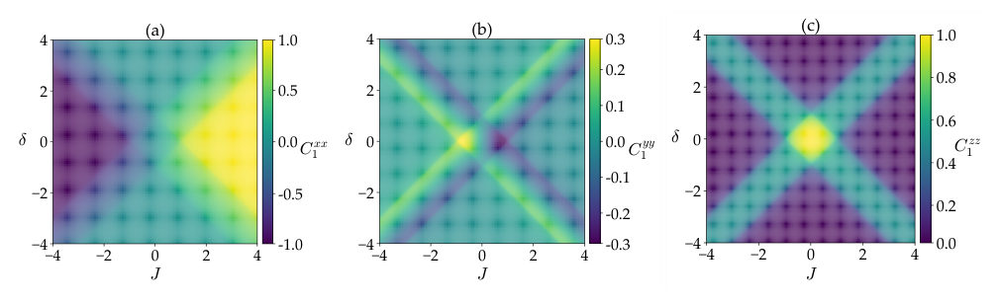
<figcaption class="paper-figure-caption"><b>Fig 4.</b> Figure 4. Nearest-neighbor spin correlations of the state given in Eq. (12), generated using a spin-1/2 central system, across the J–δ plane. Panels (a), (b), and (c) show Cxx 1 , Cyy 1 , and Czz 1 , respectively. The system size is L = 100, with c+1 = c−1 = 1/ √</figcaption>
</figure>
<figure class="paper-figure-card">
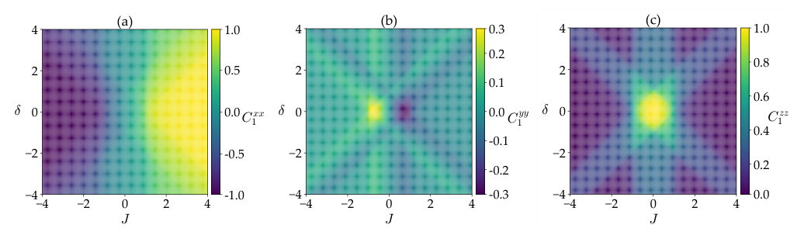
<figcaption class="paper-figure-caption"><b>Fig 5.</b> Figure 5. Nearest-neighbor spin correlations of the state given in Eq. (14), generated using a spin-1 central system, across the J–δ plane. Panels (a), (b), and (c) show Cxx 1 , Cyy 1 , and Czz 1 , respectively. The system size is L = 100, with c+1 = c0 = c−1 = 1/ √</figcaption>
</figure>
</div>

<p><strong>Summary.</strong> This paper details a method to generate quantum superpositions of ground states from the transverse-field Ising model by coupling it to a central auxiliary spin. By analyzing observables like magnetization, correlations, and the Quantum Fisher Information, the authors confirm that these superpositions span different magnetic phases. The key finding is the observation of Heisenberg scaling in the QFI, suggesting high sensitivity for parameter estimation near critical points.</p>
<p><strong>Why it may be interesting.</strong> This work connects quantum metrology (QFI scaling) directly to the physics of quantum phase transitions in integrable models, providing a concrete physical realization for quantum sensing based on many-body ground states.</p>
<details>
<summary>Detailed structure</summary>
<p><strong>Main problem.</strong> The study investigates the preparation and characterization of coherent superpositions of ground states of the transverse-field quantum Ising model belonging to different magnetic phases.</p>
<p><strong>Main result.</strong> The authors successfully demonstrate the preparation of such superpositions and show that the Quantum Fisher Information (QFI) exhibits Heisenberg scaling ($L^2$) near critical points.</p>
<p><strong>Method.</strong> The protocol involves adiabatic evolution of a joint system (Ising chain + central spin) followed by post-selection measurement on the central spin to project the chain into a superposition state.</p>
<p><strong>Model / system.</strong> The system is a one-dimensional transverse-field Ising chain coupled to a central auxiliary spin (spin-1/2 or spin-1). The Hamiltonian involves nearest-neighbor coupling strength promoted to an operator acting on the central spin.</p>
<p><strong>Key observables.</strong> Magnetization, nearest-neighbor spin correlations, entanglement (concurrence), and Quantum Fisher Information (QFI).</p>
<p><strong>Important parameters / regimes.</strong> Interaction coupling ($J$), transverse field ($h$), and the superposition parameter ($\delta$). The analysis covers the paramagnetic, ferromagnetic, and anti-ferromagnetic phases.</p>
<p><strong>Assumptions / limitations.</strong> The state preparation relies on adiabatic evolution, and certain properties are analyzed in the thermodynamic limit.</p>
<p><strong>Figures summary.</strong> Figures illustrate the concept of superpositions across three phases, show the dependence of magnetization and correlations on the $J-\delta$ plane, and display the QFI vs. $J$ plot, confirming $L^2$ scaling.</p>
<p><strong>Paper structure.</strong> The paper first introduces the model and the state preparation protocol via adiabatic evolution. It then analytically derives expressions for key observables like magnetization and correlations. Finally, it focuses on calculating the QFI, demonstrating its scaling behavior near critical points.</p>
</details>
<details>
<summary>Abstract</summary>
<p>We investigate superpositions of quantum Ising ground states generated through a quantum interaction, in which the nearest-neighbor coupling strength is promoted to an operator acting on a central auxiliary spin. We prepare the central spin in a superposition, which allows the chain to evolve coherently under different effective interaction strengths. The states are prepared by adiabatic evolution of the joint system comprising the central spin and the many-body spin chain, followed by a measurement on the central spin and post-selection of a specific outcome. It is possible to prepare superpositions of transverse-field quantum Ising ground states belonging to the three magnetic phases, namely, the paramagnetic, ferromagnetic, and anti-ferromagnetic phases. For a spin-1/2 central system, it is possible to prepare superpositions of ground states belonging to any two phases, while for the spin-1 case, the superpositions may contain three ground states, each belonging to one of the three phases. We analytically derive expressions for the magnetization, spin correlations, and entanglement of such states. The magnetization and spin correlations show distinct features in different superposition sectors. The nearest-neighbor entanglement is largest where the transverse field and Ising interaction compete, and its behavior differs from that of the magnetic observables. We also derive the quantum Fisher information relevant to estimating the Ising interaction strength. And it exhibits multiple peaks near the critical points of the constituent ground states, with the maximum value showing Heisenberg scaling, for the parameters and system sizes examined.</p>
</details>
<p><sub><a href="#top">↑ back to top</a></sub></p>

<p><a id="paper-2610.17796"></a></p>
<h3 id="skin-phase-transition-of-a-skyrmion-in-a-ferromagnetic-superfluid"><a href="http://arxiv.org/abs/2610.17796v1">Skin phase transition of a skyrmion in a ferromagnetic superfluid</a></h3>
<p><strong>Authors:</strong> Wooyoung Yun, Se Kwon Kim, Hiromitsu Takeuchi<br>
<strong>Type:</strong> theory · <strong>Category:</strong> quantum gases · <strong>PDF:</strong> <a href="https://arxiv.org/pdf/2610.17796v1">https://arxiv.org/pdf/2610.17796v1</a><br>
<strong>Analysis basis:</strong> full PDF text, analyzed in chunks
<strong>Topic relevance:</strong> <code>analog quantum simulation</code> <strong>3/5</strong> · <code>Keldysh / 2PI / non-Gaussian methods</code> <strong>1/5</strong> · <code>driven-dissipative phase transition</code> <strong>1/5</strong> · <code>methods for driven-dissipative</code> <strong>1/5</strong></p>
<div class="figure-strip-hint">↔ Scroll figures horizontally</div>
<div class="paper-figures-scroll">
<figure class="paper-figure-card">
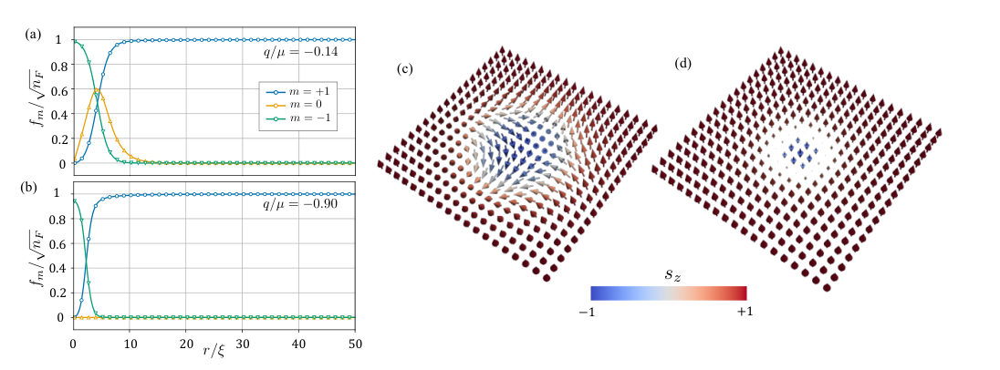
<figcaption class="paper-figure-caption"><b>Fig 1.</b> FIG. 1. Plot of the order parameter amplitude fm(r) (solid lines) and the cross section of |Ψm(r)| (markers) for (a) q/µ = −0.14 and (b) q/µ = −0.90. Markers show |Ψm(x, 0)| extracted from the two-dimensional simulation. In (a), the skyrmion has the BA-skin structure with nonzero f0 at the domain wall. On the other hand, in (b), the skyrmion has the AF-skin structure with vanishing f0(r) and in-plane magnetization. (c-d) are the spin configuration for (c) q/µ = −0.14 and (d) q/µ = −0.90. Each arrow represents the spin direction, magnitude and the color represents the z-component of the spin sz.</figcaption>
</figure>
<figure class="paper-figure-card">

<figcaption class="paper-figure-caption"><b>Fig 2.</b> FIG. 2. Numerical results for 7Li condensate. (a) The plot of max(f0/√nF ) as a function of q/µ. The blue dots are the numerical values obtained by solving Eqs. (10,11) and the red dashed line is the critical value qc/µ ≈−0.769 obtained from BdG analysis. (b) The plots of skyrmion radius. The blue dots are the numerical values and the yellow solid line is the solution of Eq. (47), which is the theoretical prediction from hydrostatic approximation. The inset enlarges the vicinity of the critical point.</figcaption>
</figure>
<figure class="paper-figure-card">
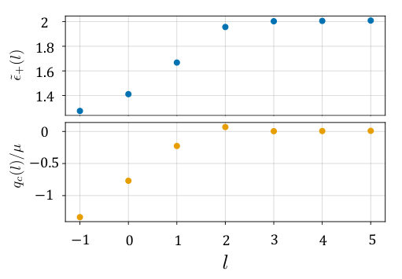
<figcaption class="paper-figure-caption"><b>Fig 3.</b> FIG. 3. (Upper) The spectrum of ˜ϵ+ and (lower) qc/µ as a function of l, respectively, for cs/cn = −0.5.</figcaption>
</figure>
<figure class="paper-figure-card">
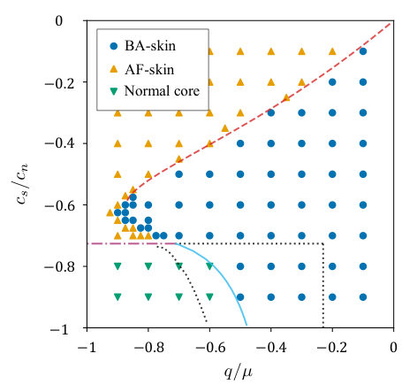
<figcaption class="paper-figure-caption"><b>Fig 4.</b> FIG. 4. The phase diagram for −1 &lt; cs/cn &lt; 0 and −1 &lt; q/µ &lt; 0 with p = 0. The blue dots represent the BA-skin phase, the yellow triangles represent the AF- skin phase, and the green inverted triangles represent the normal-core vortex phase. The red dashed curve is the criti- cal value for BA-AF transition, qc/µ [Eq. (41)], the purple dash-dotted line is the critical value for AF-Nc transition [Eq. (54)]. The straight black dotted line parallel to cs/cn- axis is qc1 [Eq. (58)], parallel to q/µ-axis is the cs/cn = γc [Eq. (59)]. The black dotted curve is the qc2, which is ob- tained numerically by parameter scanning (see the discussion below Eq. (59)). The cyan solid curve is the numerically-...</figcaption>
</figure>
<figure class="paper-figure-card">
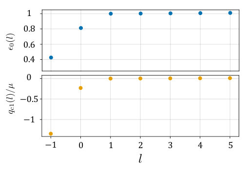
<figcaption class="paper-figure-caption"><b>Fig 5.</b> FIG. 6. (Upper) The spectrum of ϵ0 and (lower) qc1/µ as a function of l, respectively.</figcaption>
</figure>
</div>

<p><strong>Summary.</strong> This theoretical study explores the complex phase transitions of skyrmion structures within a spin-1 Bose-Einstein Condensate. By analyzing the Gross-Pitaevskii equation, the authors identify three distinct soliton phases (BA-skin, AF-skin, normal-core) whose stability is governed by external parameters. The findings advance the understanding of topological defects in magnetic quantum gases.</p>
<p><strong>Why it may be interesting.</strong> This work provides detailed theoretical predictions on complex topological textures (skyrmions) in ultracold atomic systems, linking macroscopic superfluid behavior to microscopic spin interactions.</p>
<details>
<summary>Detailed structure</summary>
<p><strong>Main problem.</strong> The paper investigates the skin phase transition of a skyrmion within a ferromagnetic superfluid system.</p>
<p><strong>Main result.</strong> Three distinct soliton structures—BA-skin, AF-skin, and normal-core—are revealed, and continuous and discontinuous phase transitions between these states are predicted.</p>
<p><strong>Method.</strong> The study employs theoretical analysis using the Bogoliubov-de Gennes equation to estimate transition boundaries, supplemented by numerical solutions of the Gross-Pitaevskii equation.</p>
<p><strong>Model / system.</strong> The system is a spin-1 Bose-Einstein Condensate (BEC) operating in a ferromagnetic regime, whose dynamics are governed by the Gross-Pitaevskii equation.</p>
<p><strong>Key observables.</strong> The structure of the soliton core (BA-core, AF-core, or normal-core), the spin configuration, and the topological charge of the skyrmion.</p>
<p><strong>Important parameters / regimes.</strong> The dimensionless parameters $q/\mu$ (quadratic Zeeman ratio) and $c_s/c_n$ (spin/density interaction ratio) control the phase transitions.</p>
<p><strong>Assumptions / limitations.</strong> The analysis assumes the linear Zeeman coefficient $p=0$ and focuses on the ferromagnetic phase ($c_s < 0$ and $q < 0$).</p>
<p><strong>Figures summary.</strong> Figures illustrate the order parameter amplitude $f_m(r)$ for different phase structures (BA-skin vs. AF-skin) and show phase diagrams mapping transitions based on $q/\mu$.</p>
<p><strong>Paper structure.</strong> The paper progresses by first identifying the three soliton phases, then using the Bogoliubov-de Gennes equation to analyze the continuous BA-AF transition, and finally using Landau instability analysis to map out the full phase diagram including the normal-core phase.</p>
</details>
<details>
<summary>Abstract</summary>
<p>Compared with a scalar Bose-Einstein condensate (BEC), a spinor BEC supports richer phenomena because of its internal spin degrees of freedom, including topological solitons such as domain walls or skyrmions. Here, we theoretically reveal three distinct axisymmetric soliton structures formed as a circular domain wall in a spin-1 BEC, connected within fixed winding numbers. We refer to these structures as the broken-axisymmetry (BA)-skin, antiferromagnetic (AF)-skin and normal-core phases. Their occurrence is controlled by the two dimensionless parameters in the absence of linear Zeeman coefficient $p=0$: $q/μ$, the ratio of the quadratic Zeeman coefficient to the chemical potential, and $c_s/c_n$, the ratio of spin interaction to the density interaction. The BA-skin and AF-skin phases exhibit local easy-plane magnetic order and local easy-plane spin-nematic order, respectively, while the normal-core phase is similar to a doubly quantized vortex analogous to that of a scalar BEC with a density depletion at the center. We obtain semi-analytical estimates of selected transition boundaries separating these phases by analyzing the Bogoliubov-de Gennes equation and also numerically confirm them by solving the Gross-Pitaevskii equation. We estimate the skyrmion radius using a hydrostatic approximation and compare the result with numerical solutions. We envision our results on skyrmions in a spin-1 BEC can trigger further investigation on novel soliton structures in a magnetic superfluid.</p>
</details>
<p><sub><a href="#top">↑ back to top</a></sub></p>

<p><a id="paper-2610.18474"></a></p>
<h3 id="unequal-coherent-ergotropy-at-equal-interferometric-visibility-and-energy-in-quantum-controlled-interferometers"><a href="http://arxiv.org/abs/2610.18474v1">Unequal Coherent Ergotropy at Equal Interferometric Visibility and Energy in Quantum-Controlled Interferometers</a></h3>
<p><strong>Authors:</strong> Tonipe Anuradha, André H. A. Malavazi, Borhan Ahmadi, Lucas Pollyceno, Pedro R. Dieguez<br>
<strong>Type:</strong> theory · <strong>Category:</strong> quantum information and computing · <strong>PDF:</strong> <a href="https://arxiv.org/pdf/2610.18474v1">https://arxiv.org/pdf/2610.18474v1</a><br>
<strong>Analysis basis:</strong> full PDF text, analyzed in chunks
<strong>Topic relevance:</strong> <code>interference shaping light</code> <strong>3/5</strong> · <code>quantum measurements</code> <strong>3/5</strong></p>
<div class="figure-strip-hint">↔ Scroll figures horizontally</div>
<div class="paper-figures-scroll">
<figure class="paper-figure-card">

<figcaption class="paper-figure-caption"><b>Fig 1.</b> FIG. 1: Schematic circuit representation of the two Mach–Zehnder interferometric setups considered. In both cases, the interferometric path qubit is initialized in the Gibbs state. (a) In the QDCE, the first beam splitter (BS) is a fixed Hadamard gate (yellow box), while the second (purple box) is controlled by the BS controller. (b) In the QCRE, the roles are swapped, so that the first BS is controlled, while the sec- ond is a fixed Hadamard. In both cases, the phase shifter (gray box) imprints a relative phase ϕ on arm |1⟩.</figcaption>
</figure>
<figure class="paper-figure-card">

<figcaption class="paper-figure-caption"><b>Fig 2.</b> FIG. 2: (a)–(c) Output ergotropy components as functions of the phase ϕ for different values of the beam-splitter mixing angle α (legend), and (d) coherent ergotropy gap, at q = 1. (a) Incoherent ergotropy Rinc/ω, common to both setups since Rinc QDCE = Rinc QCRE [Eq. (41)], and nonzero only for cos ϕ &lt; 0, vanishing at α = π/2. (b) Coherent ergotropy of the QDCE, Rcoh QDCE/ω [Eq. (31)], which is phase-dependent through G(α, ϕ) and dips to zero at α = π/4, ϕ = π/2, 3π/2. (c) Coherent ergotropy of the QCRE, Rcoh QCRE/ω [Eq. (40)]. The QCRE coherent ergotropy is everywhere at least as large as that of the QDCE. (d) Heatmap of the coherent ergotropy gap Rcoh QCRE −Rcoh QDCE on the (α, ϕ) plane...</figcaption>
</figure>
<figure class="paper-figure-card">

<figcaption class="paper-figure-caption"><b>Fig 3.</b> FIG. 3: Contour maps of the total ergotropy R/qω on the (α, ϕ) plane for QDCE (left) and QCRE (right). Dotted white curves are iso-ergotropic contours [25]. The thermal factor q only rescales the map, so that Rθ/q is independent of the initial temperature [Eq. (46)] for q &gt; 0, extended to q = 0 by continuity. Both peak at the qubit maximum for α = 0, ϕ = π, and are pinned at ωq/2 along α = π/2. They differ in their zeros, since the QDCE output becomes passive at α = π/4, ϕ = π/2 and 3π/2 (dark regions), where the QCRE still yields ωq/(2 √</figcaption>
</figure>
<figure class="paper-figure-card">

<figcaption class="paper-figure-caption"><b>Fig 4.</b> FIG. 4: Work–like signal–to–noise ratio SNR for the (a) QDCE and (b) QCRE setups, and its equal (c) incoherent component, for q = 1/2. (d) SNRcoh gap.</figcaption>
</figure>
<figure class="paper-figure-card">

<figcaption class="paper-figure-caption"><b>Fig 5.</b> FIG. 5: Controller entropy difference S(ˆρQDCE C ) −S(ˆρQCRE C ) versus the coherent-ergotropy gap (Rcoh QCRE −Rcoh QDCE)/ω, for α ∈[0, π/2] and ϕ ∈[0, 2π], at four values of q. Stars mark the extreme points α = π/4, ϕ = π/2, 3π/2, and the dotted curve traces them as q varies.</figcaption>
</figure>
</div>

<p><strong>Summary.</strong> This paper analyzes quantum interferometers to show that the extractable work (ergotropy) is not fully characterized by interference visibility. By comparing two experimental setups, the authors demonstrate that the path predictability retained by the setup—a resource inaccessible to simple output measurements—contributes a measurable, non-zero amount to the coherent work. This establishes path information as a distinct, operational thermodynamic resource.</p>
<p><strong>Why it may be interesting.</strong> This work provides a concrete, measurable example where standard quantum coherence measures (like visibility) fail to capture the full thermodynamic resource content, linking quantum foundations (which-path information) directly to thermodynamics (extractable work).</p>
<details>
<summary>Detailed structure</summary>
<p><strong>Main problem.</strong> The study investigates whether the coherent ergotropy (unitarily extractable work) in quantum interferometers is solely determined by output visibility or if it is sensitive to path predictability inaccessible to standard measurements.</p>
<p><strong>Main result.</strong> The coherent ergotropy differs between two interferometer setups (QDCE vs. QCRE), showing that path predictability retained by the setup acts as an additional, measurable thermodynamic resource beyond what is revealed by interference visibility.</p>
<p><strong>Method.</strong> The authors compare the coherent ergotropy extracted from the output battery for two specific Mach-Zehnder interferometer arrangements, analyzing the difference using path predictability and Landauer-bound related costs.</p>
<p><strong>Model / system.</strong> The system is a Mach-Zehnder interferometer (MZI) using a two-level system (TLS) as both a quantum battery and a which-path probe. The analysis compares two protocols: the Quantum Delayed-Choice Experiment (QDCE) and the Quantum-Controlled Reality Experiment (QCRE).</p>
<p><strong>Key observables.</strong> Coherent ergotropy ($R_{	ext{coh}}$), Interference Visibility ($V$), Path Predictability ($P$), and Which-Way Distinguishability ($D$).</p>
<p><strong>Important parameters / regimes.</strong> The path predictability ($P$) and the geometric overlap parameter ($
u$) are crucial, with the analysis examining non-relativistic and relativistic limits.</p>
<p><strong>Assumptions / limitations.</strong> The analysis assumes $\hbar=1$ and relates the work advantage to the Landauer bound on the cost of locally resetting the beam-splitter controller.</p>
<p><strong>Figures summary.</strong> Figure 1 schematically illustrates the two MZI setups being compared: (a) QDCE (fixed first BS, controlled second BS) and (b) QCRE (controlled first BS, fixed second BS).</p>
<p><strong>Paper structure.</strong> The paper establishes the theoretical framework by defining ergotropy and comparing the QDCE and QCRE protocols. It derives the observables for both setups, analyzes the difference in coherent ergotropy, and extends the findings to a relativistic realization involving spin-path correlation.</p>
</details>
<details>
<summary>Abstract</summary>
<p>The ergotropy, or unitarily extractable work, of a quantum system naturally splits into incoherent and coherent contributions, respectively set by population inversion and coherences in the energy eigenbasis. We show that this split makes the coherent ergotropy of a Mach--Zehnder qubit sensitive to path predictability that the output interference fringes do not reveal. We send the path qubit, prepared as a thermal quantum battery, through two quantum-controlled interferometers built from the same elements, a fixed beam splitter and a beam splitter coherently controlled to be present or absent, differing only in the order in which these two act. The two arrangements share identical visibility, stored energy, and incoherent ergotropy at every point in the parameter space. Yet, for work extracted from the output battery alone, placing the controlled beam splitter first never yields less coherent ergotropy, and at fixed visibility and interferometric phase the difference is governed by the path predictability that this ordering creates. The same expression reappears as a purity deficit on the beam-splitter controller, so the work advantage comes with a Landauer bound on the cost of locally resetting the controller that is never larger at the same temperature. We further examine the effects of decoherence on the battery and consider a relativistic realization in which a Wigner rotation correlates the particle's spin with its path. Tracing out the spin decoheres the battery and allows the two arrangements to exhibit different coherent ergotropies even in regimes where their non-relativistic counterparts coincide. These results show that interference visibility is not a complete measure of the coherence available as work.</p>
</details>
<p><sub><a href="#top">↑ back to top</a></sub></p>

<p><a id="paper-2610.17943"></a></p>
<h3 id="wannierstm-efficient-superconducting-scanning-probe-spectroscopy-from-maximally-localized-wannier-functions"><a href="http://arxiv.org/abs/2610.17943v1">WannierSTM: Efficient superconducting scanning-probe spectroscopy from maximally localized Wannier functions</a></h3>
<p><strong>Authors:</strong> Oscar Moreno Segura, Dorye L. Esteras, Andrei Shumilin, Gonzalo Rivero-Carracedo, Riku Tuovinen, José J. Baldoví<br>
<strong>Type:</strong> theory · <strong>Category:</strong> other · <strong>PDF:</strong> <a href="https://arxiv.org/pdf/2610.17943v1">https://arxiv.org/pdf/2610.17943v1</a><br>
<strong>Analysis basis:</strong> full PDF text, analyzed in chunks
<strong>Topic relevance:</strong> <code>Keldysh / 2PI / non-Gaussian methods</code> <strong>3/5</strong> · <code>methods for driven-dissipative</code> <strong>3/5</strong></p>
<div class="figure-strip-hint">↔ Scroll figures horizontally</div>
<div class="paper-figures-scroll">
<figure class="paper-figure-card">
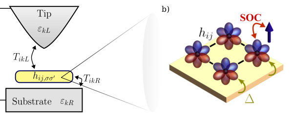
<figcaption class="paper-figure-caption"><b>Fig 1.</b> Figure 1: a) Schematic of the transport setup consisting of a central region coupled to two electrodes. b) Close-up of the central region.</figcaption>
</figure>
<figure class="paper-figure-card">
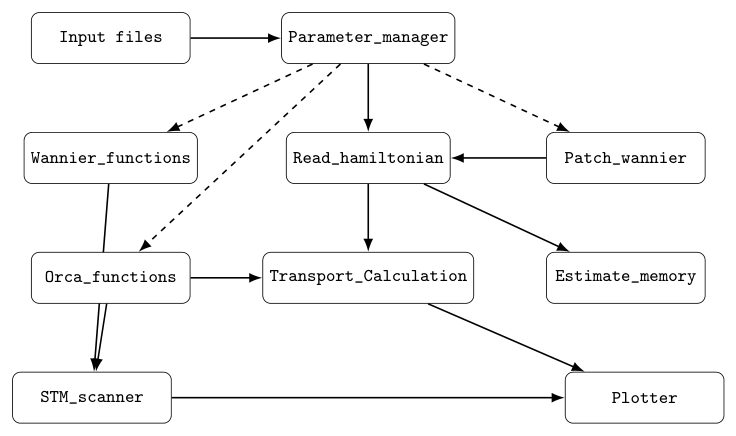
<figcaption class="paper-figure-caption"><b>Fig 2.</b> Figure 2: Workflow of the WannierSTM simulation pipeline, showing preprocessing, Hamiltonian construction, transport calcu- lation, and post-processing steps. Dashed lines indicate optional paths. Wannier_functions and Orca_functions are activated depending on the type of input files and whether STM scanning is enabled, while Patch_wannier is activated when periodic Wannier Hamiltonians are used.</figcaption>
</figure>
<figure class="paper-figure-card">
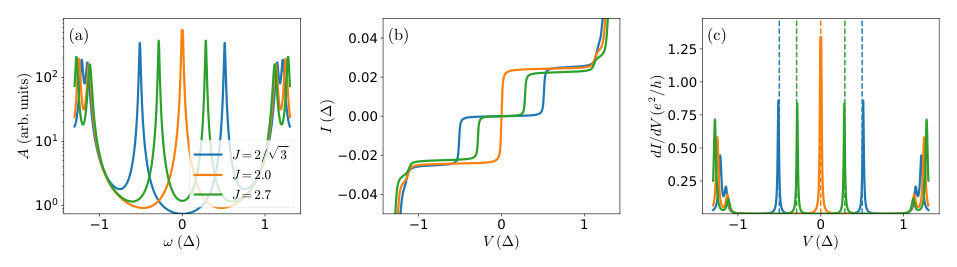
<figcaption class="paper-figure-caption"><b>Fig 3.</b> Figure 3: (a) Spectral function, (b) current-voltage, and (c) differential conductance for the YSR model. Parameters: N = 50, t = 1, µ = 0, ∆= 0.1, Γ = 0.05, and β = 10. In panel (c), the dashed vertical lines are calculated using Equation (16).</figcaption>
</figure>
<figure class="paper-figure-card">
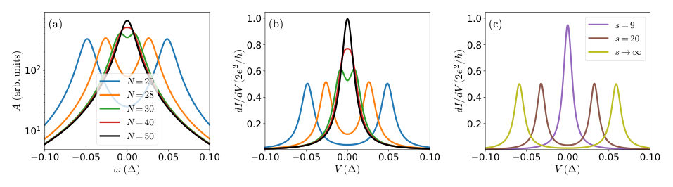
<figcaption class="paper-figure-caption"><b>Fig 4.</b> Figure 4: (a) Spectral function and (b) differential conductance for nanowires of different length. The model parameters are t = 1, µ = 0, ∆= 0.1, α = 0.5, and Vz = 0.25, corresponding to the topological phase. (c) Differential conductance for different values of the confining potential with N = 50 in the topologically trivial regime. Parameters: t = 1, µ = 2, ∆= 0.1, α = 0.5, and Vz = 1.2. In all cases, Γ = 0.01 and β = 10.</figcaption>
</figure>
<figure class="paper-figure-card">
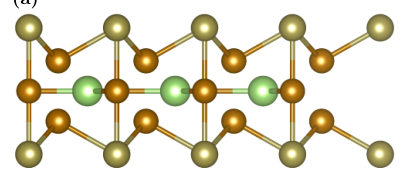
<figcaption class="paper-figure-caption"><b>Fig 5.</b> Figure 5: Side view of the optimized crystal structures of (a) Fe3GaTe2 and (b) Fe2CoGaTe2 monolayers.</figcaption>
</figure>
</div>

<p><strong>Summary.</strong> This work introduces WannierSTM, a novel, efficient computational framework for simulating superconducting STM spectroscopy. It merges first-principles electronic structure methods using Wannier functions with the NEGF formalism in the Nambu basis. This allows for rapid, closed-form calculation of transport properties in complex superconducting nanostructures.</p>
<p><strong>Why it may be interesting.</strong> It provides a powerful, efficient, and unified computational tool for studying superconducting quantum transport, which is highly relevant for understanding molecular electronics and superconducting quantum devices.</p>
<details>
<summary>Detailed structure</summary>
<p><strong>Main problem.</strong> The paper aims to bridge the gap between first-principles electronic structure calculations and efficient simulations of superconducting scanning tunneling microscopy (STM). It seeks a computationally tractable method to model complex quantum transport phenomena in nanoscale superconducting hybrid structures.</p>
<p><strong>Main result.</strong> The authors developed WannierSTM, a Python-based framework that calculates transport quantities like $I-V$ and $dI/dV$ in a closed analytical form, enabling rapid spectroscopy over broad parameter spaces.</p>
<p><strong>Method.</strong> The method combines maximally localized Wannier functions (MLWF) derived from DFT with the nonequilibrium Green's function (NEGF) formalism, incorporating superconductivity via the Nambu-spinor formalism.</p>
<p><strong>Model / system.</strong> The system modeled is a superconducting hybrid nanostructure, treated as a central region coupled to STM tip and substrate electrodes. The Hamiltonian is formulated in the Nambu basis to account for pairing potentials ($\Delta$).</p>
<p><strong>Key observables.</strong> Current-voltage characteristics ($I-V$) and differential conductance ($dI/dV$) spectra.</p>
<p><strong>Important parameters / regimes.</strong> Superconducting pairing potential ($\Delta$), spin-orbit coupling, magnetic textures, and the bias voltage ($V$).</p>
<p><strong>Assumptions / limitations.</strong> The electrode coupling is treated using the wide-band limit approximation (WBLA), and superconductivity is modeled at a mean-field level without self-consistent feedback from nonequilibrium currents.</p>
<p><strong>Figures summary.</strong> Not specified, but the notes imply figures demonstrate the schematic transport setup and results for various superconducting hybrid nanostructures.</p>
<p><strong>Paper structure.</strong> The paper builds theoretically by establishing the Hamiltonian in the Nambu formalism, applying the NEGF framework with the WBLA, and deriving a computationally efficient Landauer-Büttiker-like formula for current calculation.</p>
</details>
<details>
<summary>Abstract</summary>
<p>We present a Python-based program that combines maximally localized Wannier functions-based first-principles electronic structure with the nonequilibrium Green's function formalism to enable efficient simulations of scanning tunneling microscopy (STM). The workflow builds upon standard density functional theory packages to construct compact transport Hamiltonians that preserve the properties of realistic materials. Superconductivity is incorporated via an effective pairing potential within the Nambu-spinor formalism, while coupling to the STM tip and substrate electrodes is treated using the wide-band limit approximation. Within this formulation, transport quantities such as current-voltage characteristics and differential conductance are evaluated in a closed analytical form. This avoids explicit numerical energy integrations and enables rapid spectroscopic calculations over broad parameter spaces. The framework provides a unified and computationally efficient approach for modeling superconducting hybrid nanostructures with spin-orbit coupling, magnetic textures, and spin polarization. Representative applications in spin chains, two-dimensional and molecular magnets on a superconductor demonstrate its robust capabilities for both simple model systems and realistic ab initio molecular structures relevant to modern STM experiments.</p>
</details>
<p><sub><a href="#top">↑ back to top</a></sub></p>

<p><a id="paper-2610.18747"></a></p>
<h3 id="competing-delocalisation-and-localisation-induced-by-the-dipolar-tail-in-fragmented-lattice-gases"><a href="http://arxiv.org/abs/2610.18747v1">Competing delocalisation and localisation induced by the dipolar tail in fragmented lattice gases</a></h3>
<p><strong>Authors:</strong> Sabhyata Gupta, Adith Sai Aramthottil, Luis Santos<br>
<strong>Type:</strong> theory · <strong>Category:</strong> quantum gases · <strong>PDF:</strong> <a href="https://arxiv.org/pdf/2610.18747v1">https://arxiv.org/pdf/2610.18747v1</a><br>
<strong>Analysis basis:</strong> full PDF text, analyzed in chunks
<strong>Topic relevance:</strong> <code>analog quantum simulation</code> <strong>3/5</strong> · <code>Frenkel-Kontorova</code> <strong>1/5</strong> · <code>scars &amp; prethermalization</code> <strong>1/5</strong></p>
<div class="figure-strip-hint">↔ Scroll figures horizontally</div>
<div class="paper-figures-scroll">
<figure class="paper-figure-card">

<figcaption class="paper-figure-caption"><b>Fig 1.</b> FIG. 2. Distribution of the crossover value (V/t)∗over all ini- tial states for which ∆¯η changes sign, for (a) the 1/r3 interac- tion and (b) the modified dipolar interaction with βeff = 1.8. The dashed vertical line in each panel marks the median, (V/t)∗ med = 13.0 for 1/r3 and 8.1 for βeff = 1.8. The larger NNN coupling for βeff = 1.8 shifts the distribution towards smaller (V/t)∗.</figcaption>
</figure>
<figure class="paper-figure-card">

<figcaption class="paper-figure-caption"><b>Fig 2.</b> FIG. 1. Late-time inhomogeneity ¯η as a function of V/t for the NN model (black), the bare dipolar interaction 1/r3 (blue), and the modified dipolar interaction with βeff = 1.8 (red), for an L = 16, N = 8 chain with open boundary conditions. Solid lines show the average over all 4410 initial states in the NNN = 4 manifold, while shaded regions indicate the corre- sponding standard deviation. The NN result increases mono- tonically, whereas the dipolar models lie below it at smaller V/t and above it at larger V/t. The stronger NNN coupling for βeff = 1.8 shifts the crossover to smaller V/t and produces a larger inhomogeneity at strong coupling. The average is taken over τ ∈[900, 1000] ℏ/t....</figcaption>
</figure>
<figure class="paper-figure-card">
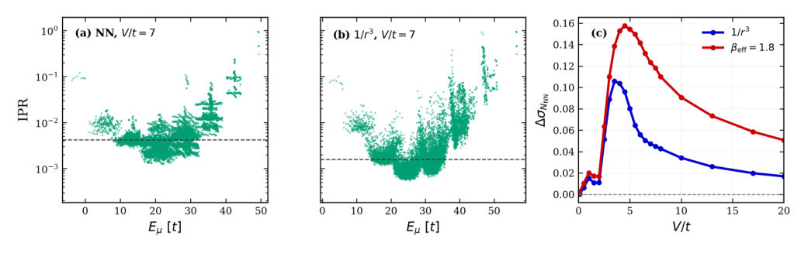
<figcaption class="paper-figure-caption"><b>Fig 3.</b> FIG. 3. Eigenstates and inter-manifold hybridisation for the L = 16, N = 8 chain. Panels (a) and (b) show the inverse participation ratio IPRµ of the full-Hamiltonian eigenstates as a function of the eigenenergy Eµ at V/t = 7, for (a) the NN model and (b) the bare 1/r3 interaction. The dashed line indicates the median IPR in each panel. At this intermediate coupling, the dipolar interaction yields a smaller median IPR, showing that the eigenstates are spread over a larger number of Fock configurations than in the NN model. Panel (c) quantifies the associated inter-manifold hybridisation through the excess standard deviation of the NN-bond number, ∆σNNN (see text). Results are shown for the...</figcaption>
</figure>
<figure class="paper-figure-card">

<figcaption class="paper-figure-caption"><b>Fig 4.</b> Figure 4 shows the eigenstates of the Hamiltonian pro- jected onto the NNN = 4 manifold, P4HP4. In the NN model, all Fock configurations within this manifold have the same interaction energy 4V . The NN interac- tion therefore leaves their degeneracy intact; within the projected Hamiltonian it contributes only an overall en- ergy shift. The corresponding eigenstates consequently remain strongly delocalised in the Fock basis, with low IPR, independently of V/t, as shown in Fig. 4(a). The dipolar tail changes this situation qualitatively. Already its leading contribution, V2NNNN, lifts the degeneracy between Fock configurations with different NNNN. As V/t increases, configurations with...</figcaption>
</figure>
<figure class="paper-figure-card">

<figcaption class="paper-figure-caption"><b>Fig 5.</b> Figure 3(c) shows ∆σNNN for both dipolar interactions. It is positive and maximal at intermediate V/t ∼5, demon- strating that the dipolar tail keeps the state distributed over a broader range of NNN manifolds than in the NN model. At larger V/t, ∆σNNN decreases towards zero as inter-manifold hybridisation becomes suppressed in both models. The confinement-modified dipolar inter- action with βeff = 1.8 produces a larger ∆σNNN, showing that its stronger NNN coupling enhances the delocalising inter-manifold mechanism.</figcaption>
</figure>
</div>

<p><strong>Summary.</strong> This paper investigates how long-range dipolar interactions affect the dynamics of bosons in a 1D lattice, revealing a non-monotonic behavior. The dipolar tail first enhances delocalization at moderate interaction strengths by coupling different system states, but at stronger interactions, it causes localization by splitting energy degeneracies. This competition defines a critical crossover scale relevant for experiments with magnetic atoms.</p>
<p><strong>Why it may be interesting.</strong> This work provides a detailed theoretical understanding of how long-range, anisotropic interactions can lead to complex, non-monotonic dynamics in quantum many-body systems, which is highly relevant for controlling quantum transport in engineered quantum materials.</p>
<details>
<summary>Detailed structure</summary>
<p><strong>Main problem.</strong> The paper investigates how the long-range dipolar tail of interactions modifies the dynamics of strongly interacting hard-core bosons in a 1D lattice, focusing on the competition between delocalization and localization.</p>
<p><strong>Main result.</strong> The dipolar tail exhibits a non-monotonic effect, first enhancing delocalization at intermediate interaction strengths ($V/t$) by sustaining inter-manifold hybridization, but then promoting localization at larger $V/t$ by lifting degeneracies within manifolds.</p>
<p><strong>Method.</strong> The study uses real-time dynamics simulations and analyzes various diagnostics like time-averaged density inhomogeneity ($ar{\eta}$) and the Inverse Participation Ratio (IPR) to quantify localization and delocalization.</p>
<p><strong>Model / system.</strong> The system is hard-core bosons on an open 1D lattice governed by a Hamiltonian including nearest-neighbor and long-range dipolar interactions ($V_r \propto 1/r^3$). The analysis compares this to a simple nearest-neighbor model.</p>
<p><strong>Key observables.</strong> Time-averaged density inhomogeneity ($ar{\eta}$), Inverse Participation Ratio (IPR), and the crossover strength $(V/t)^*$.</p>
<p><strong>Important parameters / regimes.</strong> The interaction-to-tunnelling ratio ($V/t$) is the primary varying parameter, with intermediate and large $V/t$ defining distinct physical regimes.</p>
<p><strong>Assumptions / limitations.</strong> The analysis relies on projecting the dynamics onto manifolds defined by the number of nearest-neighbor bonds ($N_{\mathrm{NN}}$) and considering the effect of transverse confinement.</p>
<p><strong>Figures summary.</strong> Figures illustrate the crossover of $ar{\eta}$ vs. $V/t$ for different interaction models, showing the transition from delocalizing to localizing behavior, and also plot IPR and hybridization measures ($\Delta\sigma_{NNN}$) across the parameter space.</p>
<p><strong>Paper structure.</strong> The paper systematically analyzes the Hamiltonian, defines key diagnostics ($ar{\eta}$, IPR), and then explores the non-monotonic dependence of the dynamics on $V/t$, detailing the mechanisms of inter-manifold hybridization (delocalizing) versus intra-manifold degeneracy lifting (localizing).</p>
</details>
<details>
<summary>Abstract</summary>
<p>We investigate how the long-range tail of dipole-dipole interactions modifies the dynamics of strongly interacting hard-core bosons in a one-dimensional lattice. In the nearest-neighbour model, large interactions generate an emergent Hilbert-space fragmentation into manifolds labelled by the number of nearest-neighbour bonds \(N_{\mathrm{NN}}\). The dipolar tail has a non-monotonic effect on this fragmented dynamics as the interaction-to-tunnelling ratio \(V/t\) is increased. At intermediate \(V/t\), it enhances delocalisation relative to the nearest-neighbour model by reducing the energetic detuning between neighbouring \(N_{\mathrm{NN}}\) manifolds and sustaining their hybridisation by hopping. At larger \(V/t\), the same tail lifts degeneracies within each manifold, beginning with the splitting associated with the next-nearest-neighbour bond number \(N_{\mathrm{NNN}}\), and promotes intra-manifold localisation and Hilbert-space shattering. The competition between these two effects produces a crossover from a delocalising to a localising role of the dipolar tail, visible in the late-time spatial inhomogeneity. This crossover occurs for nearly all initial states considered and persists at different fillings. Transverse confinement strengthens the short-range part of the dipolar tail and shifts the crossover to lower \(V/t\), bringing it into the regime relevant to current experiments with magnetic atoms and polar molecules.</p>
</details>
<p><sub><a href="#top">↑ back to top</a></sub></p>

<p><a id="paper-2610.18250"></a></p>
<h3 id="molecular-dynamics-verification-of-effective-gravity-under-heat-conduction"><a href="http://arxiv.org/abs/2610.18250v1">Molecular-Dynamics Verification of Effective Gravity under Heat Conduction</a></h3>
<p><strong>Authors:</strong> Satoshi Uruno, Naoko Nakagawa<br>
<strong>Type:</strong> both · <strong>Category:</strong> statistical mechanics · <strong>PDF:</strong> <a href="https://arxiv.org/pdf/2610.18250v1">https://arxiv.org/pdf/2610.18250v1</a><br>
<strong>Analysis basis:</strong> full PDF text, analyzed in chunks
<strong>Topic relevance:</strong> <code>non-equilibrium universality</code> <strong>3/5</strong> · <code>analog quantum simulation</code> <strong>1/5</strong> · <code>driven-dissipative phase transition</code> <strong>1/5</strong></p>
<div class="figure-strip-hint">↔ Scroll figures horizontally</div>
<div class="paper-figures-scroll">
<figure class="paper-figure-card">

<figcaption class="paper-figure-caption"><b>Fig 1.</b> FIG. 1. System and representative separated configurations at Tm = 0.43. (a) Simulation geometry. (b),(c) Equilib- rium and heat-conducting configurations, respectively, for (¯ρ, N, L/W) = (0.4, 3200, 2) at g = 1.32 × 10−5; εp = 0 in (b) and εp ≃0.09 in (c), with T1 = 0.4325 and T2 = 0.4275. (d) Schematic isotherm. The vertical dotted lines mark the two mean densities used in the simulations, ¯ρ = 0.05 and 0.4; the horizontal dashed line denotes ps. Yellow and cyan indicate the metastable and spinodal regions, respec- tively. (e) The elongated near-binodal system, (¯ρ, N, L/W) = (0.05, 3380, 20), at ∆T = 0.02 (εp ≃0.36), displayed horizon- tally with gravity pointing right and heat flowing...</figcaption>
</figure>
<figure class="paper-figure-card">
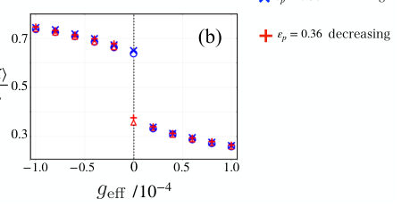
<figcaption class="paper-figure-caption"><b>Fig 2.</b> FIG. 2. Effective-gravity test near the gas-side binodal, (¯ρ, N, L/W) = (0.05, 3380, 20). The same representative ⟨X⟩/L responses are plotted against (a) g and (b) geff. Open circles and triangles denote increasing and decreasing scans at ∆T = 0; crosses and pluses denote the corresponding scans at ∆T = 0.02 (εp ≃0.36).</figcaption>
</figure>
<figure class="paper-figure-card">

<figcaption class="paper-figure-caption"><b>Fig 3.</b> FIG. 3. Transition points for L/W = 20 compared with the prediction geff = 0 (black line). Upper and lower panels show increasing and decreasing g, respectively. Circles mark the last pre-switch value; bars extend to the first post-switch value and show scan resolution, not statistical uncertainty. Small horizontal offsets separate overlapping points at the same εp. The authors’ results were plotted using Python code prepared with assistance from OpenAI Codex.</figcaption>
</figure>
<figure class="paper-figure-card">
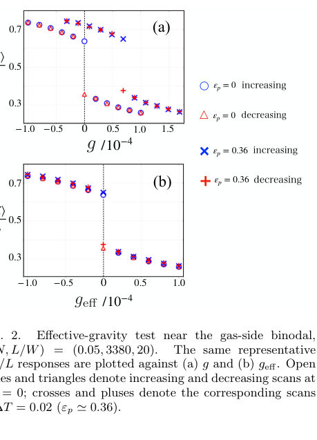
<figcaption class="paper-figure-caption"><b>Fig 4.</b> Figure 2(a) compares ⟨X⟩/L at ∆T = 0 and 0.02 as functions of g. In equilibrium, liquid lies above the gas for g &lt; 0 and below it for g &gt; 0. The increasing and decreasing scans change configuration near g = 0, with no resolved hysteresis width. Under heat conduction, the transition shifts to positive g in both directions. Liquid therefore remains above gas over a finite range of down- ward gravity for which it lies below gas in equilibrium. Using the independently measured equilibrium satura- tion pressures, we predict a shift ∆ps/(m¯ρL) ≃7 × 10−5</figcaption>
</figure>
<figure class="paper-figure-card">
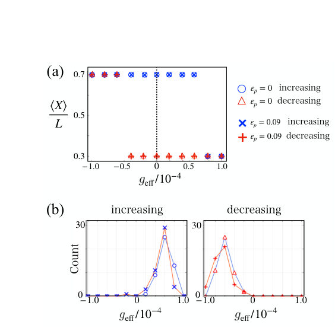
<figcaption class="paper-figure-caption"><b>Fig 5.</b> FIG. 4. Effective-gravity test in the hysteretic system, (¯ρ, N, L/W) = (0.4, 3200, 2). (a) ⟨X⟩/L responses from one selected cycle at each temperature difference. (b) Switching- frequency distributions for increasing (left) and decreasing (right) g, each containing 48 events. Blue (red) symbols de- note increasing (decreasing) scans: open circles (triangles) for ∆T = 0 and crosses (pluses) for ∆T = 0.005 (εp ≃0.09). Connecting lines in (b) are blue for ∆T = 0 and red for ∆T = 0.005 and guide the eye.</figcaption>
</figure>
</div>

<p><strong>Summary.</strong> This paper uses molecular dynamics simulations of a 2D fluid to test global thermodynamics in the presence of heat conduction and gravity. It shows that the phase transition point shifts from zero gravity to a finite effective gravity, confirming the predictive power of global thermodynamics for non-equilibrium structure formation. The methodology successfully maps non-equilibrium behavior onto an effective thermodynamic parameter.</p>
<p><strong>Why it may be interesting.</strong> The work provides a rigorous demonstration of how global thermodynamic principles can predict non-equilibrium structural changes in classical many-body systems, which has parallels in understanding non-equilibrium dynamics in quantum many-body systems.</p>
<details>
<summary>Detailed structure</summary>
<p><strong>Main problem.</strong> The paper tests the predictive power of global thermodynamics in determining the equilibrium configuration of a fluid undergoing phase separation when subjected to weak heat conduction and gravity.</p>
<p><strong>Main result.</strong> The molecular dynamics simulations confirm that the configurational transition shifts from zero gravity ($g=0$) to a finite effective gravity ($ ext{g}_{    ext{eff}} &gt; 0$) under heat conduction, validating the global thermodynamic prediction.</p>
<p><strong>Method.</strong> The study uses classical molecular dynamics simulations of a 2D Lennard-Jones fluid, comparing results obtained under equilibrium conditions ($\Delta T=0$) versus non-equilibrium heat conduction ($\Delta T>0$).</p>
<p><strong>Model / system.</strong> The system is a 2D Lennard-Jones fluid confined between two walls maintained at different temperatures ($T_1$ and $T_2$). The dynamics are governed by the Lennard-Jones potential and include external gravitational forces.</p>
<p><strong>Key observables.</strong> Configurational order parameter ($\langle X 
angle/L$), effective gravity ($    ext{g}_{    ext{eff}}$), and the saturation-pressure difference ($\Delta p_s$).</p>
<p><strong>Important parameters / regimes.</strong> Weak heat conduction ($\Delta T$), weak gravity ($g$), and the ratio of pressure differences ($\Delta p_s / (ar{
ho}L)$).</p>
<p><strong>Assumptions / limitations.</strong> The analysis is limited to weak heat conduction and weak gravity, where higher-order corrections are negligible.</p>
<p><strong>Figures summary.</strong> Figures show the shift of the liquid-gas transition point from $g=0$ to $    ext{g}<em ext_eff="ext{eff">{    ext{eff}} &gt; 0$ under heat conduction, and demonstrate that the hysteretic response also aligns when plotted against $   ext{g}</em>$.}</p>
<p><strong>Paper structure.</strong> The paper establishes the theoretical framework linking global thermodynamics to effective gravity, simulates the 2D Lennard-Jones fluid under varying gravity and temperature gradients, and compares the resulting phase transition shifts and hysteresis loops against the theoretical predictions.</p>
</details>
<details>
<summary>Abstract</summary>
<p>We test the effective-gravity prediction of global thermodynamics using standard molecular dynamics of a two-dimensional Lennard-Jones fluid. Under weak heat conduction with the lower boundary hotter than the upper boundary, the transition between liquid below gas and liquid above gas shifts from zero to finite downward gravity. Using independently measured equilibrium saturation pressures, we calculate the shift predicted by global thermodynamics and find agreement with the observed transition shift. The transition occurs at zero effective gravity, where the hydrostatic pressure difference balances the saturation-pressure difference between the two boundaries. The hysteresis response under heat conduction also agrees with the equilibrium response when plotted against effective gravity. These results establish the predictive power of global thermodynamics for nonequilibrium structure formation.</p>
</details>
<p><sub><a href="#top">↑ back to top</a></sub></p>

<p><a id="paper-2610.17790"></a></p>
<h3 id="multi-parameter-estimation-enhanced-by-level-crossing-hamiltonian-structure-with-bayesian-feedback"><a href="http://arxiv.org/abs/2610.17790v1">Multi-parameter estimation enhanced by level crossing Hamiltonian structure with Bayesian feedback</a></h3>
<p><strong>Authors:</strong> Ryo Tatsumi, Le Bin Ho, Hiroaki Matsueda<br>
<strong>Type:</strong> theory · <strong>Category:</strong> quantum information and computing · <strong>PDF:</strong> <a href="https://arxiv.org/pdf/2610.17790v1">https://arxiv.org/pdf/2610.17790v1</a><br>
<strong>Analysis basis:</strong> full PDF text, analyzed in chunks
<strong>Topic relevance:</strong> <code>quantum measurements</code> <strong>3/5</strong> · <code>analog quantum simulation</code> <strong>1/5</strong> · <code>non-equilibrium universality</code> <strong>1/5</strong></p>
<div class="figure-strip-hint">↔ Scroll figures horizontally</div>
<div class="paper-figures-scroll">
<figure class="paper-figure-card">

<figcaption class="paper-figure-caption"><b>Fig 1.</b> FIG. 1. The eigenvalue of the system’s Hamiltonian as a function of the parameter s where (a) q(a) ̸= 0, (b) q(a) = 0.</figcaption>
</figure>
<figure class="paper-figure-card">

<figcaption class="paper-figure-caption"><b>Fig 2.</b> FIG. 2. QFI for the ground state of a two-level system. Heatmaps of (a) Qss and (b) Qaa computed from the ground state. (c) Qss as a function of s for several fixed values of a, and (d) Qaa as a function of a for several fixed values of s. In all panels, the QFI increases as the system approaches the crossing point (s, a) = (0, 0), where it becomes sharply enhanced.</figcaption>
</figure>
<figure class="paper-figure-card">

<figcaption class="paper-figure-caption"><b>Fig 3.</b> FIG. 3. QFI with a unitary process in two-level systems. The heatmaps of (a) Qss, (b) Qaa, and (c) Tr[Q−1] with initial state has θ = 0. The heatmaps of (d)Qss, (e)Qaa, and (f)Tr[Q−1] with initial state has θ = π/2.</figcaption>
</figure>
<figure class="paper-figure-card">
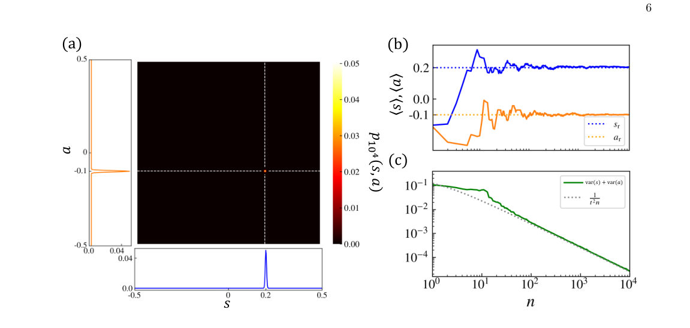
<figcaption class="paper-figure-caption"><b>Fig 4.</b> FIG. 4. (a)The probability density function pn(s, a) sharply peaked around the true value (sr, ar) = (0.2, −0.1) where n = 10000. (b)Blue and orange line exhibits the expected value of s and a as a function of the measurement number n. They approach to their true value represented the dotted line. (c)Measured uncertainty of the parameters. Solid lines shows var(s) + var(a) and the dot line shows the classical bound derived from the CFIM.</figcaption>
</figure>
<figure class="paper-figure-card">

<figcaption class="paper-figure-caption"><b>Fig 5.</b> FIG. 5. The eigenvalues of Hamiltonian for (a)Bx = 0 and (b)Bx = 0.2. The energy levels of ϵ2 and ϵ4 are degenerate when Bx = 0.</figcaption>
</figure>
</div>

<p><strong>Summary.</strong> This paper develops a theory showing that quantum energy level crossings act as optimal 'hot spots' for multi-parameter quantum sensing. By analyzing the QFIM and using unitary quench dynamics combined with Bayesian estimation, the authors demonstrate a protocol that achieves the theoretical maximum precision limit (Holevo bound) without needing complex entanglement. This offers a scalable pathway for high-precision quantum measurements across various physical platforms.</p>
<p><strong>Why it may be interesting.</strong> This work provides a concrete, generalizable methodology for optimizing quantum sensors by identifying specific Hamiltonian structures (level crossings) that maximize sensitivity, which is highly relevant for designing practical quantum measurement protocols.</p>
<details>
<summary>Detailed structure</summary>
<p><strong>Main problem.</strong> The study establishes a theoretical framework connecting the geometric structure of energy level crossings in quantum Hamiltonians to the ultimate precision limits achievable in multi-parameter quantum metrology.</p>
<p><strong>Main result.</strong> Level crossings are identified as universal operating points for high-precision quantum sensing, allowing estimation precision to saturate the Holevo Cramér–Rao bound using resource-efficient unitary quench dynamics.</p>
<p><strong>Method.</strong> The authors employ the Quantum Fisher Information Matrix (QFIM) and the Holevo bound to quantify estimation limits, developing a resource-efficient sensing protocol based on unitary quench dynamics and Bayesian estimation.</p>
<p><strong>Model / system.</strong> The analysis uses a minimal two-parameter Hamiltonian, exemplified by a two-level system and a two-spin Ising model, whose parameters are varied to induce level crossings or avoided crossings.</p>
<p><strong>Key observables.</strong> Quantum Fisher Information Matrix (QFIM), Classical Fisher Information Matrix (CFIM), estimation error variance ($ ext{var}(s) +   ext{var}(a)$), and the Holevo bound.</p>
<p><strong>Important parameters / regimes.</strong> The parameters defining the Hamiltonian (e.g., $s$ and $a$ in the two-level model; $B_z$ and $B_x$ in the Ising model) and the crossing point coordinates ($s_c, a_c$).</p>
<p><strong>Assumptions / limitations.</strong> The analysis often relies on approximations near the level crossing point, and the initial state is assumed to be pure for the Holevo bound calculation.</p>
<p><strong>Figures summary.</strong> Figures illustrate the energy eigenvalues near crossings (Fig. 1), and heatmaps show the enhancement of QFI components ($Q_{ss}, Q_{aa}$) near the crossing point, confirming the failure of the ground state alone.</p>
<p><strong>Paper structure.</strong> The paper progresses by first establishing the general problem, analyzing the two-level model using QFIM, demonstrating the failure of the ground state, and finally proposing and validating a resource-efficient protocol using unitary dynamics and Bayesian feedback, confirmed by matching the Holevo bound to the CFI.</p>
</details>
<details>
<summary>Abstract</summary>
<p>Level crossings, where two quantum energy levels intersect, are ubiquitous in quantum systems and play a central role in controlling quantum dynamics. In this study, we establish a framework that connects these level crossing structures to the ultimate precision limits of quantum metrology. By analyzing a Hamiltonian with the level crossings structure, we identify the conditions under which multiple parameters can be estimated simultaneously with maximal sensitivity near the level crossing point. We then construct a resource efficient sensing protocol based on unitary quench dynamics and Bayesian estimation, enabling high precision, low cost parameter estimation without requiring entanglement or complex control. We present a protocol whose estimation precision saturates the Holevo Cramer Rao bound, the tightest achievable precision bound in multi parameter estimation. Using the two level model and the two spin Ising model as illustrative examples, we demonstrate how the protocol can be applied to a system with level crossing Hamiltonian structure. Our findings reveal that level crossings serve as universal operating points for precision quantum metrology, offering a simple and scalable path toward practical multi parameter sensing across diverse quantum platforms.</p>
</details>
<p><sub><a href="#top">↑ back to top</a></sub></p>

<p><a id="paper-2610.18527"></a></p>
<h3 id="phases-of-a-rotating-bose-einstein-condensate-trapped-in-a-hard-wall-potential"><a href="http://arxiv.org/abs/2610.18527v1">Phases of a rotating Bose-Einstein condensate trapped in a hard-wall potential</a></h3>
<p><strong>Authors:</strong> Hélène Perrin, G. M. Kavoulakis<br>
<strong>Type:</strong> theory · <strong>Category:</strong> quantum gases · <strong>PDF:</strong> <a href="https://arxiv.org/pdf/2610.18527v1">https://arxiv.org/pdf/2610.18527v1</a><br>
<strong>Analysis basis:</strong> full PDF text, analyzed in chunks
<strong>Topic relevance:</strong> <code>analog quantum simulation</code> <strong>3/5</strong> · <code>Keldysh / 2PI / non-Gaussian methods</code> <strong>1/5</strong></p>
<div class="figure-strip-hint">↔ Scroll figures horizontally</div>
<div class="paper-figures-scroll">
<figure class="paper-figure-card">
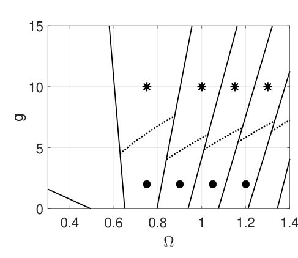
<figcaption class="paper-figure-caption"><b>Fig 1.</b> FIG. 1: Phase diagram, where on the x axis is the rotational frequency of the trap Ω(in units of Ω0 = ℏ/(MR2 0)) and on the y axis is the (dimensionless) coupling g. Here we have a hard-wall trapping potential with R/R0 = 3. The solid lines, which are given by Eq. (13), give the discontinuous transi- tions, while the dotted curves give the continuous ones. The dotted curves separate the phase diagram into two parts. In the lower part the order parameter corresponds to vortices of multiple quantization. In the upper part, the order parame- ter corresponds to a mixed state, see Eq. (14). In the region of multiple quantization, each time one crosses a solid line, the circulation increases by...</figcaption>
</figure>
<figure class="paper-figure-card">

<figcaption class="paper-figure-caption"><b>Fig 2.</b> FIG. 2: (Colour online). (a), (c), (e), (g) Density and (b), (d), (f), (h) phase of the order parameter, in a hard-wall potential, with R/R0 = 3, for the case of multiply-quantized vortex states, where the order parameter is ∝eim0θ, with g = 2. In (a) and (b) Ω/Ω0 = 0.75, where m0 = 2; in (c) and (d) Ω/Ω0 = 0.90, where m0 = 3; in (e) and (f) Ω/Ω0 = 1.05, where m0 = 4; in (g) and (h) Ω/Ω0 = 1.20, where m0 = 5. Here the axes are measured in units of R0, and the density in units of R−2 0 .</figcaption>
</figure>
<figure class="paper-figure-card">
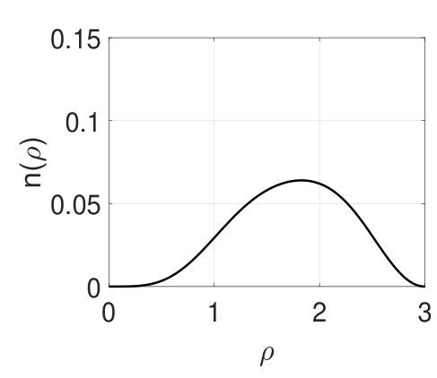
<figcaption class="paper-figure-caption"><b>Fig 3.</b> FIG. 3: The transverse profile of the density that corresponds to Fig. 2 (a), i.e., for g = 2, m0 = 2, and Ω/Ω0 = 0.75. Here R/R0 = 3, the x axis is measured in units of R0, and the y axis in units of R−2 0 .</figcaption>
</figure>
<figure class="paper-figure-card">

<figcaption class="paper-figure-caption"><b>Fig 4.</b> FIG. 4: (Colour online). (a), (c), (e), (g) Density and (b), (d), (f), (h) phase of the order parameter, in a hard-wall potential, with R/R0 = 3, and g = 10. In (a) and (b) Ω/Ω0 = 0.75; in (c) and (d) Ω/Ω0 = 1.00; in (e) and (f) Ω/Ω0 = 1.15; in (g) and (h) Ω/Ω0 = 1.30. Here the axes are measured in units of R0, and the density in units of R−2 0 .</figcaption>
</figure>
<figure class="paper-figure-card">
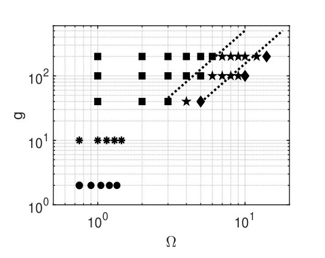
<figcaption class="paper-figure-caption"><b>Fig 5.</b> FIG. 5: More general phase diagram (log-log plot), where on the x axis is the rotational frequency of the trap Ω(in units of Ω0) and on the y axis is the (dimensionless) coupling g. Here we have a hard-wall trapping potential, with R/R0 = 3. The circles “•” denote the multiply-quantized vortex states, which are very close to the Bessel eigenstates of the non-interacting problem. The asterisks “∗” denote the mixed states, which are linear superpositions of Bessel eigenstates. The squares “■” denote the phase of a vortex lattice. The stars “⋆” denote the phase of a vortex lattice with a hole. Finally, the diamonds “♦” denote the giant-vortex phase, which resembles the multiply-quantized...</figcaption>
</figure>
</div>

<p><strong>Summary.</strong> This paper maps out the complex phase diagram of a rotating Bose-Einstein condensate confined in a hard-wall potential. By varying the rotational frequency and interaction strength, the authors predict transitions between multiple quantized vortex states, vortex lattices, and giant vortices. This work provides a unified theoretical framework for understanding superfluid behavior in rotating quantum gases.</p>
<p><strong>Why it may be interesting.</strong> This work provides a comprehensive phase diagram for a fundamental quantum system (BEC) under rotation, connecting mean-field theory to observable vortex structures and phase transitions, which is highly relevant to AMO physics.</p>
<details>
<summary>Detailed structure</summary>
<p><strong>Main problem.</strong> The study investigates the rotational properties and resulting quantum phases of a zero-temperature Bose-Einstein condensate confined within a hard-wall potential.</p>
<p><strong>Main result.</strong> The system exhibits multiple distinct phases—including vortex lattices, central holes, and giant vortices—whose stability depends critically on the interplay between the rotational frequency ($\Omega$) and the interaction coupling constant ($g$).</p>
<p><strong>Method.</strong> The analysis employs the mean-field approximation, reducing the problem to a quasi-two-dimensional effective Hamiltonian, and mapping out the phase diagram by minimizing the energy functional.</p>
<p><strong>Model / system.</strong> The system is a Bose-Einstein condensate (BEC) confined in a hard-wall potential, analyzed in the zero-temperature limit. The dynamics are governed by an energy functional incorporating kinetic, interaction, and rotational energy terms.</p>
<p><strong>Key observables.</strong> The primary observables are the condensate density profile, the winding number (quantization), and the identification of distinct quantum phases.</p>
<p><strong>Important parameters / regimes.</strong> The key parameters are the angular velocity ($\Omega$) and the dimensionless coupling constant ($g$), which define the phase diagram.</p>
<p><strong>Assumptions / limitations.</strong> The analysis assumes zero temperature, utilizes the mean-field approximation, and employs a quasi-two-dimensional reduction due to tight axial confinement.</p>
<p><strong>Figures summary.</strong> The paper presents a phase diagram ($\Omega$ vs. $g$) illustrating seven distinct phases, with solid and dotted lines marking discontinuous and continuous phase transitions, respectively.</p>
<p><strong>Paper structure.</strong> The paper systematically analyzes the parameter space ($\Omega$ and $g$), detailing transitions from multiply-quantized vortex states to mixed states, and then to vortex lattices, central holes, or giant vortices depending on the coupling strength.</p>
</details>
<details>
<summary>Abstract</summary>
<p>We investigate the rotational properties of a zero-temperature Bose-Einstein condensed gas, which is confined in a hard-wall potential. For weak interactions the gas carries its angular momentum via vortices of multiple quantization. As the coupling increases and for sufficiently slow rotational frequencies of the trap, the multiply-quantized vortex states become unstable against a mixed state. For stronger couplings, as the angular frequency of the trap increases, there is a transition from a vortex lattice, to a vortex lattice with a hole at the trap center, and finally to a giant vortex. For weak effective attractive interactions we still have vortices of multiple quantization. These states become unstable towards states which break the axial symmetry of the problem and resemble center-of-mass excitation, as the coupling becomes more negative. Finally, for even more attractive forces, the system becomes unstable against collapse.</p>
</details>
<p><sub><a href="#top">↑ back to top</a></sub></p>

<p><a id="paper-2610.18506"></a></p>
<h3 id="directed-percolation-in-higher-order-social-dilemmas"><a href="http://arxiv.org/abs/2610.18506v1">Directed percolation in higher-order social dilemmas</a></h3>
<p><strong>Authors:</strong> Pablo Villegas, Sandro Meloni<br>
<strong>Type:</strong> theory · <strong>Category:</strong> statistical mechanics · <strong>PDF:</strong> <a href="https://arxiv.org/pdf/2610.18506v1">https://arxiv.org/pdf/2610.18506v1</a><br>
<strong>Analysis basis:</strong> full PDF text, analyzed in chunks
<strong>Topic relevance:</strong> <code>non-equilibrium universality</code> <strong>3/5</strong></p>
<div class="figure-strip-hint">↔ Scroll figures horizontally</div>
<div class="paper-figures-scroll">
<figure class="paper-figure-card">
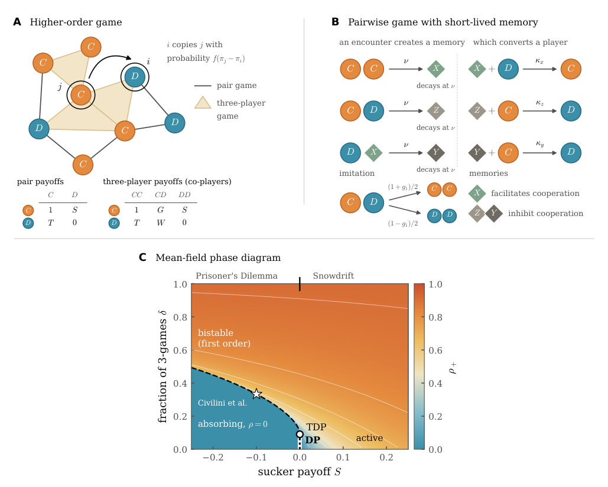
<figcaption class="paper-figure-caption"><b>Fig 1.</b> Figure 1. Microscopic models and mean-field phase diagram. (A) Higher-order game: players on a hypergraph play pairwise games on 2-hyperedges and three-player games on 3-hyperedges, and a focal player i copies a neighbor j with the Fermi probability f(πj −πi). The tables give the payoffs of a cooperator and of a defector as functions of the strategies of their co-players. (B) Pairwise game with short-lived memory, Eq. (7), in which every event involves at most two entities. Binary encounters create short-lived memories (mediators) that decay at rate ν; the memory X facilitates cooperation, whereas Z and Y inhibit it. Imitation acts at rates (1 ± g1)/2, with a bias g1 toward cooperation. (C)...</figcaption>
</figure>
<figure class="paper-figure-card">

<figcaption class="paper-figure-caption"><b>Fig 2.</b> Figure 2. Mean field. (A) Quasistationary density and (B) lifetime at S = 0 versus population size, 10 ≤N ≤5 × 105. Lines: exact QS solution of the well-mixed birth-death process of the game for the pairwise game (δ = 0), a higher-order game below the tricritical point (δ = 0.05), and the tricritical point (δ = δtc). Symbols: Gillespie simulations of the pairwise network of Eq. (7) in a well-mixed population, with the same Landau coefficients (error bars smaller than the symbols). Dashed guides: mean-field DP (ρ ∼N−1/2, τ ∼N1/2) and TDP (ρ ∼N−1/3, τ ∼N2/3). (C) First-order region at S = −0.1: stationary densities ρ∗versus δ, with the mean-field branches ρ+ (solid) and ρ−(dotted). Symbols:...</figcaption>
</figure>
<figure class="paper-figure-card">
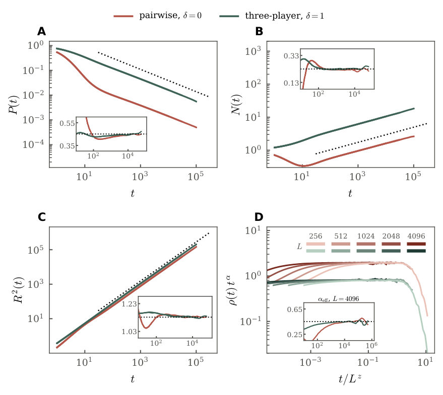
<figcaption class="paper-figure-caption"><b>Fig 3.</b> Figure 3. Two dimensions. Critical dynamics on triangular lattices for the pairwise game (δ = 0) and for a purely three-player game on all elementary triangles (δ = 1, a = −1/2). (A–C) Spreading from a single cooperator at Spw c = 0.03754 and Sho c = 0.26239: (A) survival probability P(t), (B) mean number of cooperators N(t), and (C) mean-square radius R2(t) of surviving clusters. Each curve superimposes three lattice sizes, L = 1024, 2048, and 4096, run up to tmax = 104, 3 × 104, and 105, respectively (4.6 × 108 pairwise and 4.6 × 107 three-player runs in total); no cluster reaches the boundary, so the three sizes coincide. Insets: local slopes. (D) Finite-size scaling of the density decay...</figcaption>
</figure>
</div>

<p><strong>Summary.</strong> This paper analyzes social dilemmas on hypergraphs to determine if complex, multi-player interactions are necessary for emergent critical behavior. By deriving a mesoscopic Langevin equation, the authors show that a simplified, strictly pairwise model can reproduce the critical exponents and scaling laws of the full higher-order game. This suggests that the critical physics is governed by pairwise dynamics, regardless of the complexity of the underlying group structure.</p>
<p><strong>Why it may be interesting.</strong> The work provides a powerful demonstration of universality in complex systems, showing that the critical behavior of high-order interactions can be captured by lower-order, pairwise descriptions, which is a key concept in statistical physics.</p>
<details>
<summary>Detailed structure</summary>
<p><strong>Main problem.</strong> The paper investigates whether emergent phenomena observed in complex, higher-order social dilemmas (on hypergraphs) can be accurately reproduced by simpler, strictly pairwise interaction dynamics.</p>
<p><strong>Main result.</strong> The critical behavior (e.g., directed percolation class, critical exponents) of the higher-order games is shown to be equivalent to that of the pairwise theory, suggesting group interactions are not necessary for determining critical scaling.</p>
<p><strong>Method.</strong> The authors derive a mesoscopic Langevin equation for the dynamics and compare its operator content and critical exponents derived from both the full hypergraph model and a constructed pairwise model.</p>
<p><strong>Model / system.</strong> The model involves players adopting Cooperation or Defection in social dilemmas, ranging from pairwise (2-player) to three-player (3-player) games played on hypergraphs or lattices. The dynamics are governed by payoff differences leading to an effective Langevin equation.</p>
<p><strong>Key observables.</strong> Order parameter (cooperator density $
ho$), critical exponents ($\delta_s,  heta, 2/z$), and the location of phase transition lines (Directed-Percolation line, Tricritical Point).</p>
<p><strong>Important parameters / regimes.</strong> Sucker payoff ($S$), fraction of 3-games ($\delta$), and the dimensionality of the lattice (e.g., 2D triangular lattice).</p>
<p><strong>Assumptions / limitations.</strong> The analysis assumes that the higher-order dynamics can be mapped onto an effective pairwise dynamics with short-lived memory, and that lattice correlations are irrelevant at the DP fixed point.</p>
<p><strong>Figures summary.</strong> Figures illustrate the phase diagram showing the DP, TDP, and first-order regions, and later figures show the collapse of density decay curves and the matching of critical exponents between the two dynamics on a triangular lattice.</p>
<p><strong>Paper structure.</strong> The paper first establishes the mean-field description for higher-order dilemmas, deriving the Langevin equation. It then constructs a strictly pairwise model that reproduces the necessary coefficients. Finally, it compares the critical scaling and dynamics (including 2D lattice simulations) between the two models to demonstrate equivalence.</p>
</details>
<details>
<summary>Abstract</summary>
<p>Multiplayer social dilemmas on hypergraphs show a variety of emergent phenomena, which has been attributed to group interactions. Here we test whether pairwise dynamics can reproduce them as well. We derive the mesoscopic Langevin equation of a testbed model and find the operator content of absorbing phase transitions: a directed-percolation line, a tricritical point, and a first-order region whose spinodal is the explosive transition. In our analysis, three-player games only set the values of the Landau coefficients. We construct a strictly pairwise model with short-lived memory, in which every event involves at most two entities, that reproduces these coefficients term by term and has exactly the same mean-field fixed points. Simulations confirm that the two dynamics share mean-field critical and tricritical scaling and the size of the critical mass, and that a purely three-player game on a two-dimensional triangular lattice lies in the directed-percolation class. For these games, the explosive transition and the critical mass therefore do not require group interactions, and the critical behavior is that of the pairwise theory.</p>
</details>
<p><sub><a href="#top">↑ back to top</a></sub></p>

<p><a id="paper-2610.18742"></a></p>
<h3 id="emergent-loop-geometry-in-gauge-equivariant-graph-neural-networks"><a href="http://arxiv.org/abs/2610.18742v1">Emergent Loop Geometry in Gauge-Equivariant Graph Neural Networks</a></h3>
<p><strong>Authors:</strong> Ali Rayat, Gia-Wei Chern<br>
<strong>Type:</strong> theory · <strong>Category:</strong> statistical mechanics · <strong>PDF:</strong> <a href="https://arxiv.org/pdf/2610.18742v1">https://arxiv.org/pdf/2610.18742v1</a><br>
<strong>Analysis basis:</strong> full PDF text, analyzed in chunks
<strong>Topic relevance:</strong> <code>analog quantum simulation</code> <strong>3/5</strong></p>
<div class="figure-strip-hint">↔ Scroll figures horizontally</div>
<div class="paper-figures-scroll">
<figure class="paper-figure-card">
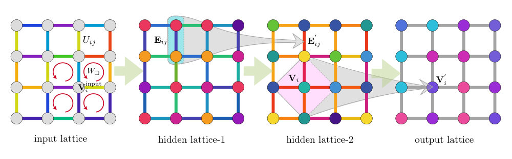
<figcaption class="paper-figure-caption"><b>Fig 1.</b> FIG. 1. Schematic of the graph neural network (GNN) and message-passing architecture. The input lattice is represented as a graph with information carried by both nodes and edges. Starting from the input edge variables Uij and local node features Vinput i , successive message-passing layers generate hidden node features Vi and edge features Eij. At each layer, an edge feature Eij is updated using information from the edge itself and the two nodes at its endpoints (top), while a node feature Vi is updated by combining its own features with information aggregated from its four nearest-neighbor nodes (bottom). Repeated message passing therefore propagates information over increasingly extended...</figcaption>
</figure>
<figure class="paper-figure-card">
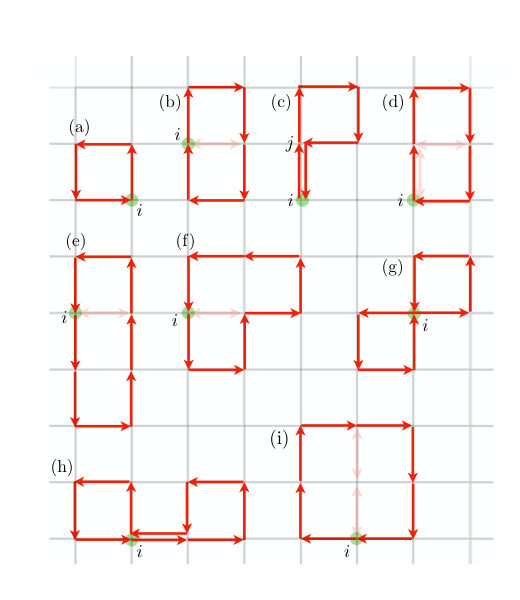
<figcaption class="paper-figure-caption"><b>Fig 2.</b> FIG. 2. Examples of closed lattice paths generated by gauge- equivariant message passing and represented by node features Vi. The green circle marks the reference node i at which each loop is anchored, while the red arrows indicate the ordered sequence of lattice links forming the path. Starting from ele- mentary plaquette loops, successive node and edge message- passing operations generate increasingly extended and geo- metrically complex closed paths, including paths that retrace links or revisit lattice sites. Panels (a)–(i) show representative short loops generated at different stages of this recursive con- struction. The corresponding message-gathering operations for these examples are...</figcaption>
</figure>
<figure class="paper-figure-card">
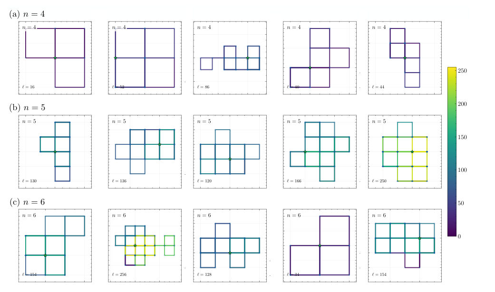
<figcaption class="paper-figure-caption"><b>Fig 3.</b> FIG. 3. Representative closed paths generated by the recursive loop-sampling algorithm. Rows (a)–(c) show realizations at recursion depths n = 4, 5, and 6, respectively; ℓdenotes the full contour length of each path. The green star marks the reference site where the path begins and ends. Color indicates the traversal step k, progressing from the beginning to the end of each path. Unlike the short examples in Fig. 2, these realizations are generated by stochastic selection of node and edge message operations, without prescribing their shapes. Paths generated at the same depth vary substantially in length and geometry and can traverse links repeatedly, revisit sites, and contain nested or...</figcaption>
</figure>
<figure class="paper-figure-card">
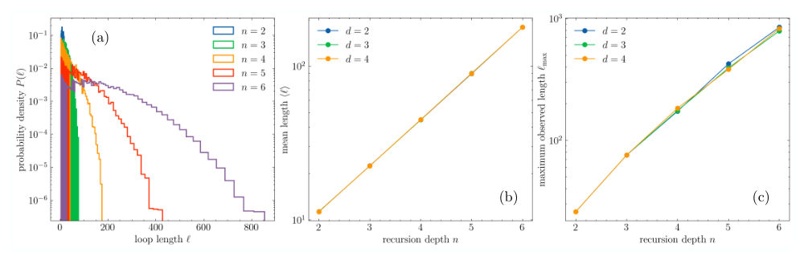
<figcaption class="paper-figure-caption"><b>Fig 4.</b> FIG. 4. Loop-length statistics of recursively generated closed paths. (a) Semilog plot of the loop-length distribution Pn(ℓ) in d = 2 for recursion depths n = 2, . . . , 6. The tails bend downward, indicating that their decay steepens with ℓand is faster than a single exponential over the displayed range. (b) Mean loop length ⟨ℓ⟩and (c) maximum observed loop length ℓmax as functions of recursion depth for d = 2, 3, 4. Both increase rapidly with depth; the maximum is the largest length in the sampled loops, rather than the maximum allowed by the recursion.</figcaption>
</figure>
<figure class="paper-figure-card">

<figcaption class="paper-figure-caption"><b>Fig 5.</b> Figure 4(a) shows that the length distribution Pn(ℓ) broadens and shifts toward larger ℓwith increasing depth. The growth of its mean follows exactly from the additive lengths of the message products. Let ¯ℓV (n) and ¯ℓE(n) denote the mean node and edge lengths after n updates. The three node choices contribute lengths ℓV , 2ℓV , and ℓV + 2ℓE, while the four edge products contribute ℓE, ℓE + ℓV , ℓE + ℓV , and ℓE + 2ℓV . Averaging these choices gives</figcaption>
</figure>
</div>

<p><strong>Summary.</strong> This paper investigates the emergent geometry of paths generated by gauge-equivariant Graph Neural Networks operating on lattice gauge theories. It finds a crucial separation where the total path length can grow exponentially while the physical spatial extent grows much more slowly. This suggests that deep network layers encode complex, highly redundant information within a relatively compact physical region.</p>
<p><strong>Why it may be interesting.</strong> The concept of path complexity diverging from simple spatial metrics is relevant to understanding entanglement structure or correlation functions in many-body systems where local interactions can lead to highly complex, non-local effective descriptions.</p>
<details>
<summary>Detailed structure</summary>
<p><strong>Main problem.</strong> To understand the geometric structure of paths and loops generated by gauge-equivariant Graph Neural Networks (GNNs) through local message passing, which is not fully captured by the simple receptive field.</p>
<p><strong>Main result.</strong> The analysis reveals a separation between the rapid, exponential growth of the total path length (contour length) and the much slower growth of the actual spatial extent of the generated loops.</p>
<p><strong>Method.</strong> The authors analyze the statistical ensemble of closed lattice walks generated by recursive node- and edge-feature operations within the GNN framework, independent of network training.</p>
<p><strong>Model / system.</strong> The model is based on lattice gauge configurations, relevant to non-Abelian gauge theories like QCD and condensed-matter systems such as quantum spin liquids. The GNN operates on a lattice structure using gauge-equivariant message passing.</p>
<p><strong>Key observables.</strong> Contour length ($\ell$), Radius of Gyration ($    ext{Rg}$), Number of Distinct Visited Sites ($N_{   ext{distinct sites}}$), and Effective Dimension ($D_{  ext{eff}}$).</p>
<p><strong>Important parameters / regimes.</strong> Network depth ($n$), spatial dimension ($d=2, 3, 4$), and the gauge link variables $U_{ij} \in G$.</p>
<p><strong>Assumptions / limitations.</strong> The analysis assumes that the path generation process retains all ordered links, including immediately retraced ones, for accurate statistical counting.</p>
<p><strong>Figures summary.</strong> Figure 8 plots geometric observables ($    ext{Rg}, N_{    ext{distinct sites}}, D_{   ext{eff}}$) against the total loop length ($\ell$) for various dimensions and recursion depths, visually confirming that length increases through repeated traversals within a slowly expanding spatial region.</p>
<p><strong>Paper structure.</strong> The paper first establishes the GNN mechanism for generating gauge-invariant loops, then analyzes the statistical properties of these paths by comparing contour length to spatial metrics, culminating in a physical interpretation via fermionic observable loop expansions.</p>
</details>
<details>
<summary>Abstract</summary>
<p>Gauge-equivariant graph neural networks generate ordered products of gauge links through local message passing, but the geometry of these internal structures is not captured by the receptive field alone. We investigate the statistical ensemble of closed lattice walks generated by recursive node- and edge-feature operations, independently of network training. Analytical and numerical results reveal a separation between rapid growth of contour length and much slower spatial expansion: deeper compositions generate increasingly long paths through repeated traversal of relatively compact regions. Loop expansions of fermionic observables provide a physical interpretation of this hierarchy, showing how spatial locality remains compatible with high-order dependence on nearby gauge fields. These findings identify complementary roles of network depth in extending spatial reach and enriching the representations constructed within that reach, providing a geometrical perspective on learning lattice gauge observables.</p>
</details>
<p><sub><a href="#top">↑ back to top</a></sub></p>

<p><a id="paper-2610.18031"></a></p>
<h3 id="optimal-lower-bound-on-the-sample-complexity-of-coherent-classical-shadows-for-mixed-states"><a href="http://arxiv.org/abs/2610.18031v1">Optimal Lower Bound on the Sample Complexity of Coherent Classical Shadows for Mixed States</a></h3>
<p><strong>Authors:</strong> Pavel Svetlichnyy<br>
<strong>Type:</strong> theory · <strong>Category:</strong> quantum information and computing · <strong>PDF:</strong> <a href="https://arxiv.org/pdf/2610.18031v1">https://arxiv.org/pdf/2610.18031v1</a><br>
<strong>Analysis basis:</strong> full PDF text, analyzed in chunks
<strong>Topic relevance:</strong> <code>quantum measurements</code> <strong>3/5</strong></p>
<div class="figure-strip-hint">↔ Scroll figures horizontally</div>
<div class="paper-figures-scroll">
<figure class="paper-figure-card">

<figcaption class="paper-figure-caption"><b>Fig 1.</b> Low-resolution page preview, page 2</figcaption>
</figure>
<figure class="paper-figure-card">
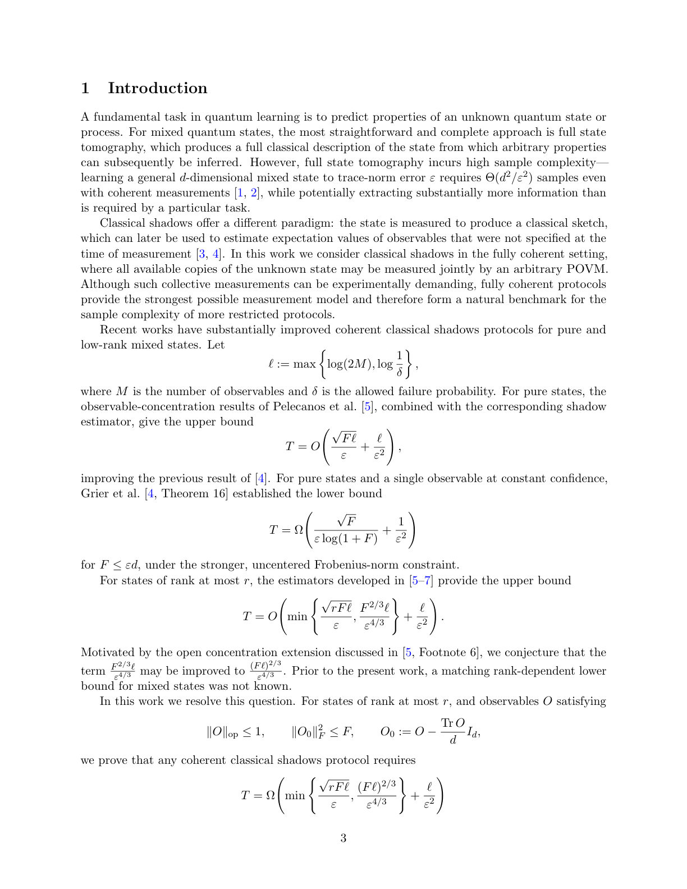
<figcaption class="paper-figure-caption"><b>Fig 2.</b> Low-resolution page preview, page 3</figcaption>
</figure>
<figure class="paper-figure-card">
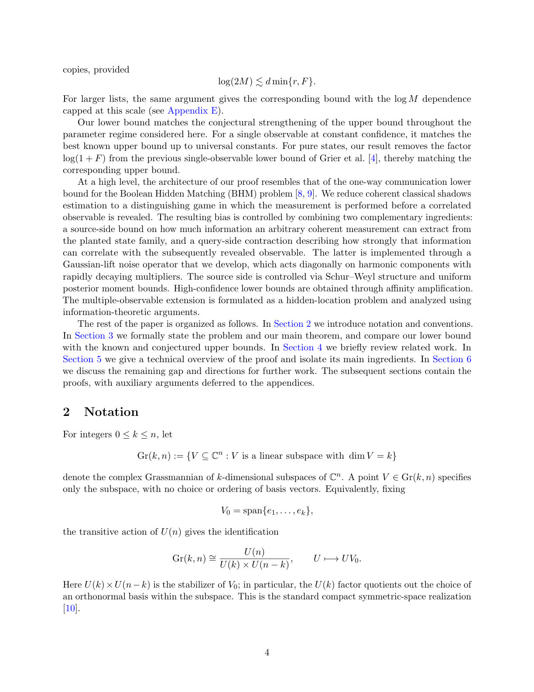
<figcaption class="paper-figure-caption"><b>Fig 3.</b> Low-resolution page preview, page 4</figcaption>
</figure>
<figure class="paper-figure-card">

<figcaption class="paper-figure-caption"><b>Fig 4.</b> Low-resolution page preview, page 5</figcaption>
</figure>
<figure class="paper-figure-card">
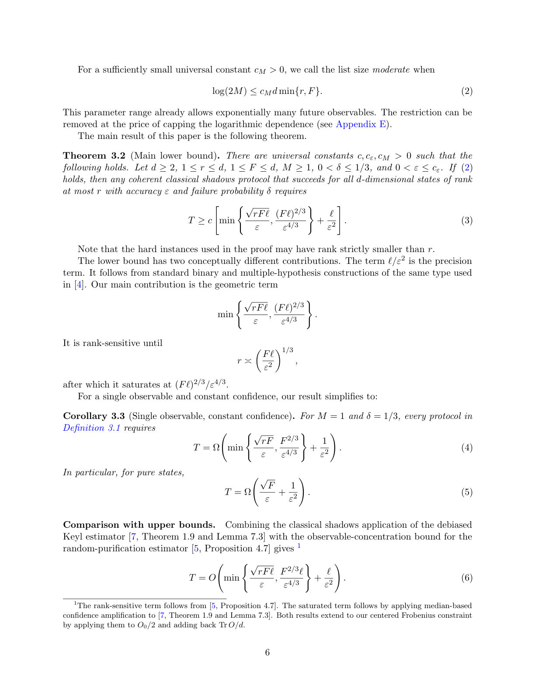
<figcaption class="paper-figure-caption"><b>Fig 5.</b> Low-resolution page preview, page 6</figcaption>
</figure>
</div>

<p><strong>Summary.</strong> This paper derives a rigorous lower bound on the sample complexity required for coherent classical shadows protocols to estimate quantum state properties. The bound depends on the state rank, the number of observables, and the desired accuracy. By matching known upper bounds, the result establishes the fundamental limits on resource scaling for quantum state estimation.</p>
<p><strong>Why it may be interesting.</strong> This work provides fundamental, quantitative bounds on the resources (number of copies) needed for state estimation protocols, which is crucial for designing practical, resource-efficient quantum measurements.</p>
<details>
<summary>Detailed structure</summary>
<p><strong>Main problem.</strong> The paper aims to determine the optimal lower bound on the sample complexity ($T$) required for coherent classical shadows protocols to estimate expectation values of observables for an unknown quantum state.</p>
<p><strong>Main result.</strong> A lower bound for the sample complexity is established as $T = \Omega \left( \min \left( rac{\sqrt{rF\ell}}{\varepsilon}, rac{(F\ell)^{2/3}}{\varepsilon^{4/3}} 
ight) + rac{\ell}{\varepsilon^2} 
ight)$, which nearly matches known upper bounds.</p>
<p><strong>Method.</strong> The proof uses techniques inspired by the Boolean Hidden Matching problem, involving a Gaussian-lift noise kernel and controlling the distinguishing advantage in an auxiliary game.</p>
<p><strong>Model / system.</strong> The system involves an unknown quantum state $
ho$ on a $d$-dimensional Hilbert space with a maximum rank $r$. The estimation is performed using $T$ copies of this state and an arbitrary joint measurement (POVM).</p>
<p><strong>Key observables.</strong> The observables $O_i$ are constrained by the operator norm ($\le 1$) and a centered squared Frobenius norm ($\le F$). The goal is to estimate expectation values of these observables.</p>
<p><strong>Important parameters / regimes.</strong> Key parameters include the state rank ($r$), the number of observables ($M$), the accuracy ($\varepsilon$), the failure probability ($\delta$), and the derived parameter $\ell = \max\{\log(2M), \log(1/\delta)\}$.</p>
<p><strong>Assumptions / limitations.</strong> The lower bound holds under the mild assumption $\log(2M) \lesssim d \min\{r, F\}$.</p>
<p><strong>Paper structure.</strong> The paper details the problem setup, reviews related work on tomography and estimation, and provides a technical overview of the proof strategy, including parameter reduction and source/query-side bounds.</p>
</details>
<details>
<summary>Abstract</summary>
<p>We study coherent classical shadows protocols for an unknown $d$-dimensional quantum state of rank at most $r$, allowing an arbitrary joint measurement on all available copies. For observables with operator norm at most one and centered squared Frobenius norm at most $F$, we study the minumum number of copies $T$ needed for the protocol to successed with propbability $1 - δ$. We prove a lower bound on $T$, that depends both on $δ$ and the number $M$ of post-measurement observables. Denoting $\ell=\max\{\log(2M),\log(1/δ)\}$, we show that $T=Ω\left(\min\left\{\frac{\sqrt{rF\ell}}{\varepsilon},\frac{(F\ell)^{2/3}}{\varepsilon^{4/3}}\right\}+\frac{\ell}{\varepsilon^2}\right)$ under the mild assumption $\log(2M)\lesssim d\min\{r,F\}$. The lower bound nearly matches the known upper bound and matches the conjectural strengthening of the known upper bound.   The proof is inspired by the framework of the proof of the lower bound for Boolean Hidden Matching. We develop a Gaussian-lift noise kernel that transfers forward and reverse Gaussian hypercontractivity to the Grassmannian, allowing us to bound the distinguishing advantage in an auxiliary game with a revealed query observable. We use Schur--Weyl structure and posterior moment bounds to control arbitrary coherent measurements on the source side.</p>
</details>
<p><sub><a href="#top">↑ back to top</a></sub></p>

<p><a id="paper-2610.18401"></a></p>
<h3 id="orbital-angular-momentum-transfer-and-beam-quality-limits-in-fork-grating-electron-diffraction"><a href="http://arxiv.org/abs/2610.18401v1">Orbital Angular Momentum Transfer and Beam-Quality Limits in Fork-Grating Electron Diffraction</a></h3>
<p><strong>Authors:</strong> P. K. Tsiopa, S. S. Baturin<br>
<strong>Type:</strong> theory · <strong>Category:</strong> other · <strong>PDF:</strong> <a href="https://arxiv.org/pdf/2610.18401v1">https://arxiv.org/pdf/2610.18401v1</a><br>
<strong>Analysis basis:</strong> full PDF text, analyzed in chunks
<strong>Topic relevance:</strong> <code>interference shaping light</code> <strong>3/5</strong></p>
<div class="figure-strip-hint">↔ Scroll figures horizontally</div>
<div class="paper-figures-scroll">
<figure class="paper-figure-card">

<figcaption class="paper-figure-caption"><b>Fig 1.</b> FIG. 1. Geometry of fork-grating preparation with compensa- tion of the selected order’s deterministic transverse momentum. The fixed incident angle ϕ is chosen so that Km = 0 in Eq. (24); the mean component of that order then propagates along the grating normal z. The coordinates (ρ, θ) are measured about this common axis. The notation k′ = 0 in the schematic denotes zero residual transverse wave vector, k⊥= 0.</figcaption>
</figure>
<figure class="paper-figure-card">

<figcaption class="paper-figure-caption"><b>Fig 2.</b> FIG. 2. Displacement of single-component diffraction profiles for m = 1 due to residual transverse tilt. The blue and red curves correspond to kx = 0 and kx = 107 m−1, respectively, with ky = 0, at z −ζ = 3 mm in the low-density regime described in the text. The profiles of Eq. (33) are shown along the positive x axis of the compensated selected order; the plotting labels (ρ0, θ0) denote the common coordinates (ρ, θ). The tilted component is displaced by αm = (z −ζ)kx/k [Eq. (26)], and its vortex zero remains at its own displaced center.</figcaption>
</figure>
<figure class="paper-figure-card">

<figcaption class="paper-figure-caption"><b>Fig 3.</b> FIG. 3. Effect of incoherent transverse-momentum averaging on the observed diffraction profile for m = 1 at z −ζ = 3 mm, with negligible Hartree correction. The blue curve is the centered component kx = ky = 0; the red curve is the ensemble profile of Eq. (34) for the Gaussian distribution in Eq. (19), with σk = 107 m−1. Both curves are line profiles along the positive x axis, with ρ0 = ρ and θ0 = θ = 0. Averaging over the displaced component centers fills the intensity minimum at the mean beam center and smooths the radial oscillations.</figcaption>
</figure>
<figure class="paper-figure-card">

<figcaption class="paper-figure-caption"><b>Fig 4.</b> FIG. 4. Diffraction profiles including the common radial electromagnetic Hartree phase for m = 1 of Eq. (17), at z−ζ = 3 mm. The blue curve represents the centered component kx = ky = 0; the red curve represents the incoherent Gaussian ensemble with σk = 107 m−1. The curves are plotted along the positive x axis, using ρ0 = ρ and θ0 = θ = 0. The broader radial structure compared with Fig. 3 illustrates the defocusing action of the Hartree phase. The scale ρc in Eq. (35) characterizes the exponential branch of the solution. This common radial phase preserves the full-plane OAM moments and transverse-state purity. The concentration for this figure is taken as n = 1018m−3 and ˜χem ≈1.5 × 1014.</figcaption>
</figure>
</div>

<p><strong>Summary.</strong> This theoretical work investigates how Orbital Angular Momentum is transferred and limited when electron beams diffract through a fork-grating structure. By incorporating the effects of an electromagnetic self-field, the authors show that while the mean OAM is topologically protected, the beam's transverse purity is limited by the initial transverse momentum spread. The methodology combines relativistic quantum mechanics with advanced diffraction theory.</p>
<p><strong>Why it may be interesting.</strong> It provides a detailed theoretical framework for quantifying fundamental quantum beam properties (OAM) in structured matter-wave optics, connecting topological invariants to measurable beam quality metrics like purity.</p>
<details>
<summary>Detailed structure</summary>
<p><strong>Main problem.</strong> The paper analyzes the transfer of Orbital Angular Momentum (OAM) and the resulting beam-quality limits when electron vortex beams diffract through a fork-grating structure.</p>
<p><strong>Main result.</strong> The mean OAM ($\langle L_z 
angle_m$) is robustly fixed by the topological rule ($m\hbar$), while the beam's transverse purity is determined by the residual transverse momentum spread ($\Delta L_{z,m}$).</p>
<p><strong>Method.</strong> The analysis uses a paraxial approximation, incorporating an electromagnetic Hartree self-field phase screen into the Fresnel propagation kernel to model the diffraction process.</p>
<p><strong>Model / system.</strong> The system involves an electron ensemble propagating through a region where it accumulates a Hartree self-field phase before diffracting through a holographic fork-grating. The description uses a modified Schrödinger-like equation derived from relativistic considerations.</p>
<p><strong>Key observables.</strong> Mean OAM ($\langle L_z 
angle_m$), Transverse Purity ($P_{\perp,m}$), and OAM Variance ($\Delta L_{z,m}$).</p>
<p><strong>Important parameters / regimes.</strong> The residual transverse momentum spread ($\Delta L_{z,m}$), the grating period ($D$), and the accumulated Hartree phase ($   ilde{\chi}_{em}$).</p>
<p><strong>Assumptions / limitations.</strong> The analysis relies on the quasistatic electromagnetic Hartree approximation and assumes a phase-screen model for propagation, neglecting higher-order self-field corrections.</p>
<p><strong>Figures summary.</strong> Figures illustrate the geometry of the fork-grating setup, including the compensation of deterministic transverse momentum, and show the displacement of the single-component beam.</p>
<p><strong>Paper structure.</strong> The paper builds from the general description of the electron ensemble and the Hartree potential, derives the order-resolved field using Bessel functions, and finally calculates the OAM variance using Hankel transforms and closure relations.</p>
</details>
<details>
<summary>Abstract</summary>
<p>We analyze fork-grating generation of electron vortex beams beyond the ideal single-mode approximation. The incident beam is described as a paraxial Gaussian ensemble with finite transverse momentum spread and a first electromagnetic Hartree phase accumulated before the grating. Within Fresnel propagation we derive an analytical expression for each diffraction order and determine the corresponding orbital-angular-momentum statistics. The mean OAM of a selected order remains fixed by the topological rule, $\langle L_z\rangle_m=mp\hbar$, while its variance is set by the residual transverse momentum spread of the beam prepared at the grating. For the Gaussian mixture, the transverse purity is $\mathcal P_{\perp,m}=[1+2(ΔL_{z,m}/\hbar)^2]^{-1}$. The observed annular profile is governed by a separate propagation-dependent blurring scale, so a beam can retain well-defined mean OAM while having low transverse purity or a partially filled vortex minimum. Within the radial phase-screen approximation, the Hartree self-field modifies the propagated profile while preserving the full-plane OAM moments and transverse purity.</p>
</details>
<p><sub><a href="#top">↑ back to top</a></sub></p>

<p><a id="paper-2610.18028"></a></p>
<h3 id="ergotropy-of-multipartite-entangled-states-in-the-quantum-atmosphere"><a href="http://arxiv.org/abs/2610.18028v1">Ergotropy of multipartite entangled states in the quantum atmosphere</a></h3>
<p><strong>Authors:</strong> Ruopu Sun, Xiaofen Huang<br>
<strong>Type:</strong> theory · <strong>Category:</strong> statistical mechanics · <strong>PDF:</strong> <a href="https://arxiv.org/pdf/2610.18028v1">https://arxiv.org/pdf/2610.18028v1</a><br>
<strong>Analysis basis:</strong> full PDF text, analyzed in chunks
<strong>Topic relevance:</strong> <code>Keldysh / 2PI / non-Gaussian methods</code> <strong>2/5</strong> · <code>methods for driven-dissipative</code> <strong>2/5</strong> · <code>correlated / nonlocal dissipation</code> <strong>1/5</strong> · <code>driven-dissipative phase transition</code> <strong>1/5</strong> · <code>non-equilibrium universality</code> <strong>1/5</strong> · <code>quantum measurements</code> <strong>1/5</strong> · <code>scars &amp; prethermalization</code> <strong>1/5</strong></p>
<div class="figure-strip-hint">↔ Scroll figures horizontally</div>
<div class="paper-figures-scroll">
<figure class="paper-figure-card">
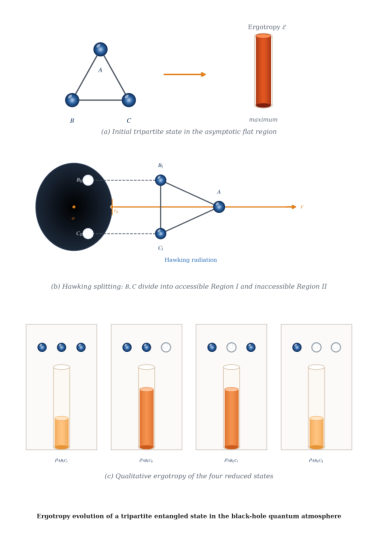
<figcaption class="paper-figure-caption"><b>Fig 1.</b> FIG. 1. Schematic of ergotropy evolution for a tripartite en- tangled state in the black-hole quantum atmosphere. (a) In the asymptotic flat region the initial state possesses maximal ergotropy. (b) Via the Hawking (Bogoliubov) transformation, the accelerated modes B, C split into an accessible Region I outside the horizon and a causally inaccessible Region II in- side it, while Alice stays in the flat region. (c) The four I/II combinations yield four reduced states whose ergotropy forms two degenerate pairs.</figcaption>
</figure>
<figure class="paper-figure-card">

<figcaption class="paper-figure-caption"><b>Fig 2.</b> FIG. 2. The ergotropy of the ρGHZ ABICI, ρGHZ ABICII, ρGHZ ABIICI, and ρGHZ ABIICII as a function of the normalized radial distance r/rh in the black hole quantum atmosphere. (a),(b) Fixed at α = 1/ √</figcaption>
</figure>
<figure class="paper-figure-card">
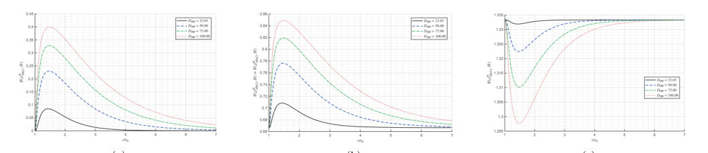
<figcaption class="paper-figure-caption"><b>Fig 3.</b> FIG. 3. The ergotropy of three bipartite subsystems of the W state as a function of normalized radial distance r/rh under differ- ent Hartle-Hawking constants DHH. Graph (a): ergotropy E(ρW ABICI, H); Graph (b): ergotropy E(ρW ABICII, H) = E(ρW ABIICI, H); Graph (c): ergotropy E(ρW ABIICII, H).</figcaption>
</figure>
</div>

<p><strong>Summary.</strong> This work studies the extractable work (ergotropy) of entangled quantum states (GHZ and W) near a black hole horizon. It finds that the way this work is lost or recovered depends critically on the initial entanglement structure and the local gravitational environment. The results establish a thermodynamic signature distinguishing different types of quantum correlations in curved spacetime.</p>
<p><strong>Why it may be interesting.</strong> It provides a concrete example of how fundamental quantum resources (entanglement) interact with gravitational thermodynamics, offering a measurable, non-equilibrium signature in curved spacetime.</p>
<details>
<summary>Detailed structure</summary>
<p><strong>Main problem.</strong> The paper investigates how the extractable work (ergotropy) of multipartite entangled states is redistributed in the quantum atmosphere of a Schwarzschild black hole due to Hawking-induced thermalization.</p>
<p><strong>Main result.</strong> The ergotropy structures for GHZ and W states are qualitatively different, and the work recovery is governed by a competition between the Hartle-Hawking constant and the radial distance.</p>
<p><strong>Method.</strong> The analysis uses quantum thermodynamics applied to curved spacetime, calculating ergotropy based on the energy spectrum of reduced density matrices derived from the Dirac field quantization.</p>
<p><strong>Model / system.</strong> The system models tripartite GHZ and W entangled states evolving in the quantum atmosphere near a Schwarzschild black hole, incorporating gravitational thermal corrections.</p>
<p><strong>Key observables.</strong> Ergotropy ($E(
ho)$), which quantifies the maximum extractable work.</p>
<p><strong>Important parameters / regimes.</strong> Hartle-Hawking constant ($D_{HH}$), normalized radial distance ($r/r_h$), and the structure of the initial entanglement (GHZ vs. W).</p>
<p><strong>Assumptions / limitations.</strong> The analysis is performed in the Hartle-Hawking vacuum, and the reduced states are constructed by tracing out complementary modes near the horizon.</p>
<p><strong>Figures summary.</strong> Figures illustrate the evolution of ergotropy for both GHZ and W states as a function of radial position, showing characteristic peaks, dips, and recovery trends.</p>
<p><strong>Paper structure.</strong> The paper progresses by introducing the problem and defining ergotropy, reviewing the curved spacetime quantization, and then analyzing the specific mathematical forms and radial dependencies of the ergotropy for GHZ and W states.</p>
</details>
<details>
<summary>Abstract</summary>
<p>We investigate the ergotropy of tripartite Greenberger-Horne-Zeilinger (GHZ) and W states in the quantum atmosphere of a Schwarzschild black hole, focusing on how the extractable work is redistributed under Hawking-induced thermalization. We find that the two classes of multipartite entanglement exhibit qualitatively different ergotropy structures. For GHZ states, the ergotropies associated with different accessible subsystems organize into two degenerate families, whereas for W states they obey a linear averaging relation with no counterpart in the GHZ case. Under symmetric gravitational thermal corrections, the two GHZ families remain separated by a constant energy gap that is independent of the radial position. We further show that the Hartle-Hawking constant $D_{HH}$ and the normalized radial distance $r/r_h$ play competing roles in the evolution of extractable work: increasing $D_{HH}$ suppresses its recovery toward the asymptotic Hawking limit, while increasing $r/r_h$ enhances the ergotropy accessible to the observers. These results show that the redistribution of extractable work in a black-hole environment is governed not only by gravitationally induced thermalization but also by the structure of the underlying multipartite entanglement, providing a thermodynamic signature that distinguishes GHZ- and W-type quantum correlations in curved spacetime.</p>
</details>
<p><sub><a href="#top">↑ back to top</a></sub></p>

<p><a id="paper-2610.17292"></a></p>
<h3 id="phase-coherent-spin-and-lattice-modulations-in-a-y-type-hexaferrite"><a href="http://arxiv.org/abs/2610.17292v1">Phase-Coherent Spin and Lattice Modulations in a Y-type Hexaferrite</a></h3>
<p><strong>Authors:</strong> Oskar Stepančić, Annika Stellhorn, Emma Campillo, Kun Zhai, Niklas Ekström, A. Corani, D. Alba Venero, R. Cubitt, E. Blackburn, L. Shen<br>
<strong>Type:</strong> experiment · <strong>Category:</strong> other · <strong>PDF:</strong> <a href="https://arxiv.org/pdf/2610.17292v1">https://arxiv.org/pdf/2610.17292v1</a><br>
<strong>Analysis basis:</strong> full PDF text, analyzed in chunks
<strong>Topic relevance:</strong> <code>Frenkel-Kontorova</code> <strong>2/5</strong> · <code>quantum measurements</code> <strong>2/5</strong> · <code>analog quantum simulation</code> <strong>1/5</strong> · <code>interference shaping light</code> <strong>1/5</strong></p>
<div class="figure-strip-hint">↔ Scroll figures horizontally</div>
<div class="paper-figures-scroll">
<figure class="paper-figure-card">

<figcaption class="paper-figure-caption"><b>Fig 1.</b> FIG. 1. Field evolution of the (0, 0, L) scattering at 5 K in the I+ channel. (a)–(c) Reciprocal-space maps measured at 0, 1, and 5 T. (d)–(f) Corresponding longitudinal profiles and fits. Vertical guides indicate L = 1.5, L = 1.65, and the fitted center of the k0 satellite. With increasing field, the zero-field incommensurate k0 satellite gives way to the commensurate k2 component, while a third satellite, k3, becomes clearly resolved near L = 1.65 above approximately 2 T.</figcaption>
</figure>
<figure class="paper-figure-card">

<figcaption class="paper-figure-caption"><b>Fig 2.</b> Figure 2 compares the temperature dependence of k2 at 1 T with that of k3 at 7 T. The integrated intensi- ties of both satellites decrease monotonically upon warm- ing, with the polarization-summed k3 intensity falling by a factor of 4.2 between 15 and 275 K. Their po-</figcaption>
</figure>
<figure class="paper-figure-card">

<figcaption class="paper-figure-caption"><b>Fig 3.</b> Figure 1 summarizes the field evolution of the (0, 0, L) scattering in the I+ channel. At zero field, the scattering is dominated by the incommensurate k0 ≈(0, 0, 1.03) component. With increasing field, the commensurate k2 = (0, 0, 1.5) component develops, followed at higher</figcaption>
</figure>
<figure class="paper-figure-card">

<figcaption class="paper-figure-caption"><b>Fig 4.</b> FIG. 2. Temperature dependence of the two satellites. (a) k2 integrated area at 1 T and (b) k3 at 7 T, in both polarization channels. (c) Asymmetry r of each. The commensurate k2 satellite is polarization-independent, r ≃0, whereas k3 main- tains r ≃0.8 at all temperatures probed.</figcaption>
</figure>
<figure class="paper-figure-card">

<figcaption class="paper-figure-caption"><b>Fig 5.</b> FIG. 4. The ±k3 pair at 7 T and 5 K, reconstructed from separate detector panels. (a) +k3 and (b) −k3; note the mir- rored abscissa. Curves are a joint fit of a Gaussian plus a polarization-independent constant. The asymmetry has the same sign at both satellites, r = +0.75(6) and +0.79(7): the polarization dependence is dominated by the even nuclear- magnetic interference term, with no odd chiral contribution resolved [Eq. (4)].</figcaption>
</figure>
</div>

<p><strong>Summary.</strong> This work uses half-polarized neutron scattering on a hexaferrite to investigate spin-lattice coupling in an incommensurate magnet. The researchers demonstrate the existence of a field-induced, phase-coherent longitudinal lattice modulation locked to the magnetic modulation at the fundamental wavevector. This observation challenges conventional symmetry rules and reveals a fundamental magnetoelastic coupling mechanism in the material.</p>
<p><strong>Why it may be interesting.</strong> While primarily experimental, the detailed analysis of symmetry-forbidden coupling mechanisms and the use of polarization-sensitive scattering techniques provide rigorous physical constraints on the coupling terms ($\mathbf{M}_0 \mathbf{M}_{\mathbf{q}}$) relevant to emergent order parameters in condensed matter systems.</p>
<details>
<summary>Detailed structure</summary>
<p><strong>Main problem.</strong> The study investigates spin-lattice coupling in incommensurate magnets, specifically addressing the observation of lattice distortions at the fundamental magnetic wavevector where symmetry rules typically forbid them.</p>
<p><strong>Main result.</strong> The Y-type hexaferrite hosts a phase-coherent magnetic and longitudinal lattice modulation at the fundamental wavevector in its high-field state, evidenced by a large, persistent nuclear-magnetic interference asymmetry.</p>
<p><strong>Method.</strong> Half-polarized neutron scattering was employed to measure the nuclear-magnetic interference asymmetry ($r$) at conjugate satellite positions, providing a sensitive probe of coupled magnetic and structural order.</p>
<p><strong>Model / system.</strong> The physical system is the Y-type hexaferrite $ ext{Ba}<em 1.6>{0.4}   ext{Sr}</em>}   ext{Mg<em 12>2   ext{Fe}</em>}    ext{O<em _mathbf_q="\mathbf{q">{22}$. The analysis focuses on the magnetoelastic coupling mechanism enabled by a uniform magnetic moment ($\mathbf{M}_0$) in the presence of an incommensurate magnetic modulation ($\mathbf{M}</em>$).}</p>
<p><strong>Key observables.</strong> The normalized asymmetry $r$, the field dependence of satellite intensities ($ ext{k}_0,   ext{k}_2,   ext{k}_3$), and the temperature dependence of the modulation amplitude and phase.</p>
<p><strong>Important parameters / regimes.</strong> The measurements are performed in the saturated high-field state, with key observations persisting up to 275 K and requiring fields above $\approx 2 	ext{ T}$ to resolve the $  ext{k}_3$ satellite.</p>
<p><strong>Assumptions / limitations.</strong> The analysis relies on the interpretation of the asymmetry parameter $r$ to isolate the nuclear-magnetic interference term, which confirms the coupling between the magnetic modulation and an internal lattice distortion.</p>
<p><strong>Figures summary.</strong> Figures detail the field evolution of scattering intensities across different wavevectors ($   ext{k}_0,   ext{k}_2,   ext{k}_3$), and show the temperature and field dependence of the $\pm	ext{k}_3$ pair asymmetry parameters, confirming the sign consistency of the interference signal.</p>
<p><strong>Paper structure.</strong> The paper establishes the theoretical context regarding symmetry constraints on structural response in incommensurate magnets. It then presents neutron scattering data showing the appearance and persistence of the $    ext{k}_3$ satellite. The core of the work uses polarization analysis to confirm that the observed signal is due to a field-enabled, phase-coherent coupling between the magnetic and lattice modulations.</p>
</details>
<details>
<summary>Abstract</summary>
<p>Spin-driven multiferroics owe their electric polarization to lattice distortions that follow the magnetic order, yet in incommensurate magnets symmetry normally forbids such a distortion at the fundamental magnetic wavevector, and the distortions themselves are rarely observed. Here we use half-polarized neutron scattering to show that the Y-type hexaferrite Ba$_{0.4}$Sr$_{1.6}$Mg$_2$Fe$_{12}$O$_{22}$ hosts, in its saturated high-field state, a magnetic modulation and a longitudinal lattice modulation at one and the same wavevector, locked in phase. The signature is a large nuclear-magnetic interference asymmetry, $r$ ~ 0.8, of the same sign at the two conjugate satellites and persisting to 275 K. The zone contrast and the field dependence of the satellite indicate an internal, field-induced longitudinal distortion. The modulated state coexists with the transverse-conical magnetoelectric phase and outlives it, revealing a fundamental-wavevector spin-lattice coupling in a magnetic field regime previously regarded as a simple ferrimagnet.</p>
</details>
<p><sub><a href="#top">↑ back to top</a></sub></p>
<hr>
<p>
<a href="index.html">← Index</a>
 · <a href="papers_02.html">← Previous</a> · <a href="papers_04.html">Next →</a>
</p>
<hr>

</body>
</html>
